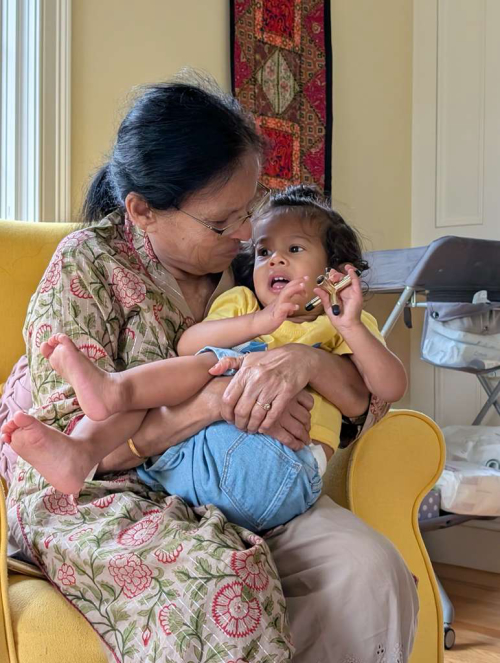
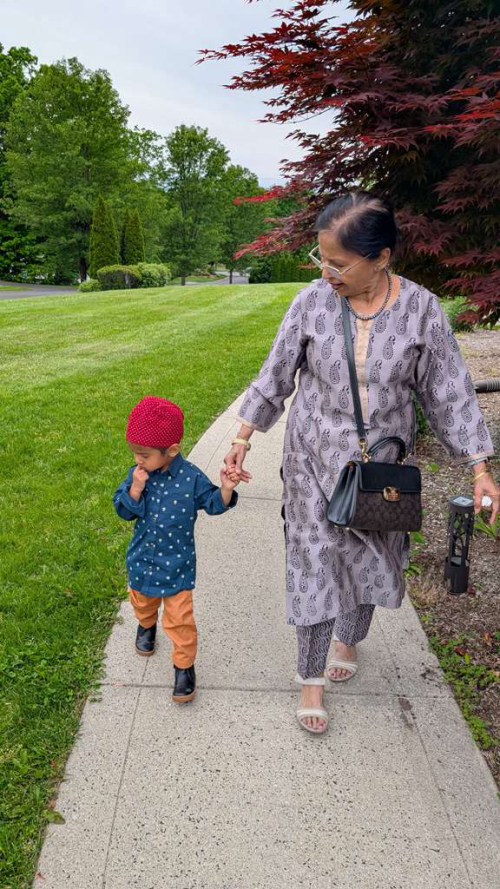
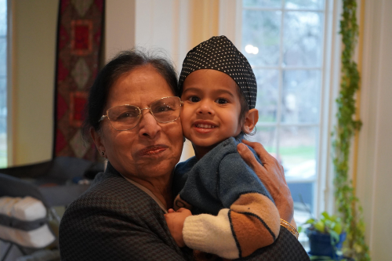
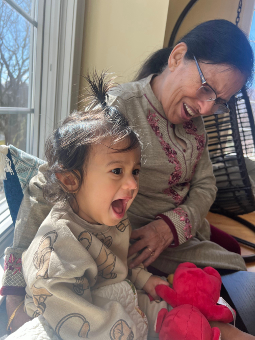
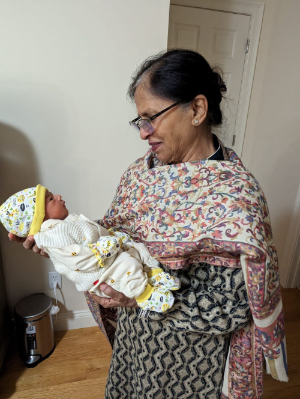
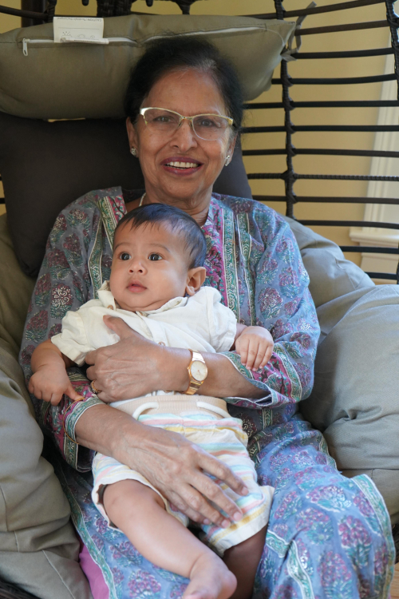
It has always been my passion to spend time with the children and to enjoy each and every moment spent with them. I believe that every child is different, therefore the parenting and grandparenting should also differ depending upon a child’s personality.
Riyan is my first grandchild born to Aman and Nidhi and third in a row after Ridam and Reet my daughter Manraj’s children. Reet is different from Ridam and Riyan is different from both Ridam and Reet. To find out genetic streaks and associate physical and behavioral characters with Mom — Dad, Grand Mas — Grand Pas, Aunts and cousins is an integral part of our Parenting. In Riyan’s case also we thoroughly enjoyed this streaking. Starting from his pattern of sleeping to his food tastes, his way of standing, his habit of eating and smiling all resembled someone or the other in the family. My little darling is still struggling hard to be an original individual.
I thoroughly enjoyed all such conversations and penned them down. I am sure Riyan will enjoy reading them when he will grow up. Many blessings, wishes and lots of love to all the children and grandchildren in this world.
Ravinder Guliani (A Grand Ma first and a Mom later)
Page 1
Welcome Riyan!
07 January 2023
Dear Riyan,
Today is the 7th of January 2023. For a long time we were waiting for this day. Early in the morning I woke up and came to know that your Mom Nidhi was uncomfortable and had bouts of pain. Though we were not sure whether it was labour pain or otherwise, we decided to take her to the hospital Cooley Dickinson where your Mumma had already registered herself for the child birth. Your Papa as he is, you know, immediately planned everything, put all essentials in the car and got ready. I too made some food arrangements for your Dadu and accompanied your Mom and Dad. All packed up in thick jackets, around 4 in the morning we drove through the deserted roads to reach the hospital in time. Nurses and doctors on duty examined your mom, admitted her and planned some procedures. Going through a lot of pain and a tough time, at 6 in the evening you were born. The nurse first put you on your mom's tummy and then gave you in your dad's and in my hands. You were so pretty, so cute, so lovely — we all were overwhelmed to see you. Papa called Neha Masi who came to your 5 Kensington house and drove your Dadu to the hospital to meet you. After looking at your sleeping face both of us returned home. Your Papa stayed in the hospital to take care of your mom and of you who were very delicate and fragile. Always remember one thing my little Prince — your Mom and Dad are the two people who love you the most. Love them equally when you grow up.
Many blessings and lots of love,
Dadi
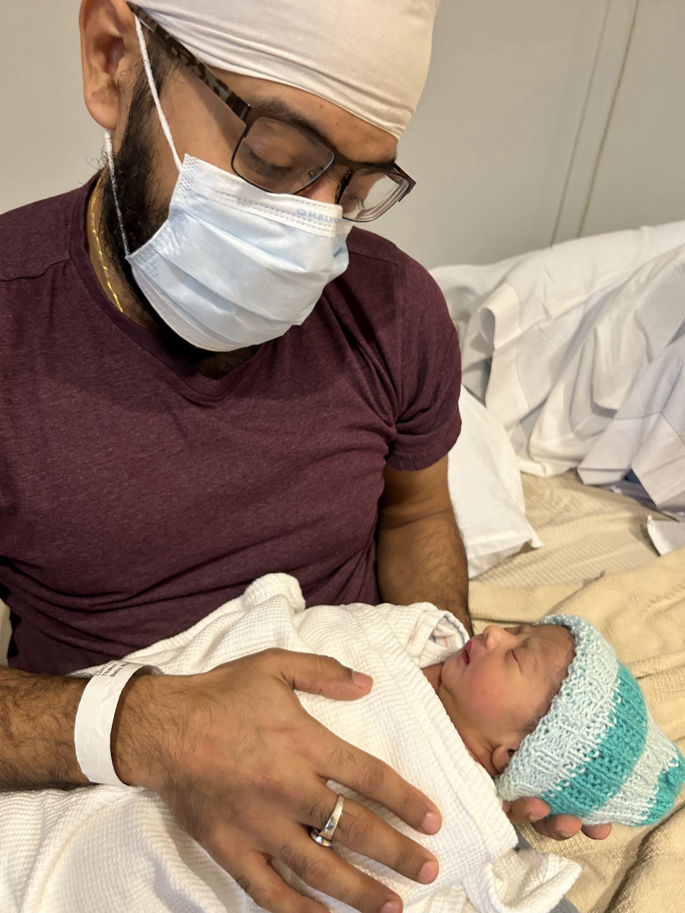
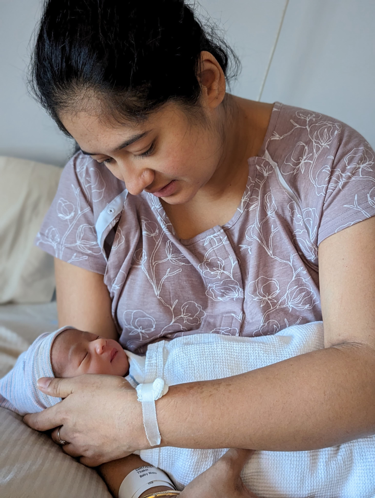
Page 2
Manraj Bua's Arrival
08 January 2023
Dear Riyan,
This morning we woke up with a knock at the door. Your Manraj Bua from LA landed at Hartford airport, rented a car and reached home. After serving her some breakfast we all got ready to reach the hospital and to see our one day old prince. You are still very small but you seemed a little better settled today. Bua took you in her hands for the first time. The doctor informed that your mom and you will be discharged from the hospital the next day. After doing our regular grocery for the week we came home to prepare for the special day when you are coming home. Neha Masi, Surya Chachu and your Bua inflated so many blue and white balloons and decorated stairs and entire pathway to your bedroom. I decorated your basinet with the greeting card I brought from India and with the print out of my poem which I wrote for you.
My little darling always remember that your bua is the only sibling your papa has. She and her family love you so much. Neha Masi and Surya Chachu are the two most loving and trust worthy friends your Mumma and Papa have. They all are family to you.
Many hugs (no kisses for now…I am concerned for your delicate skin),
Dadi
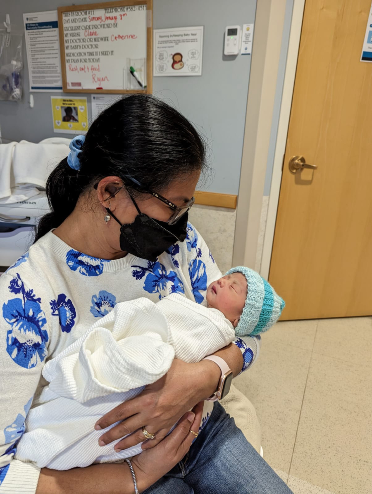
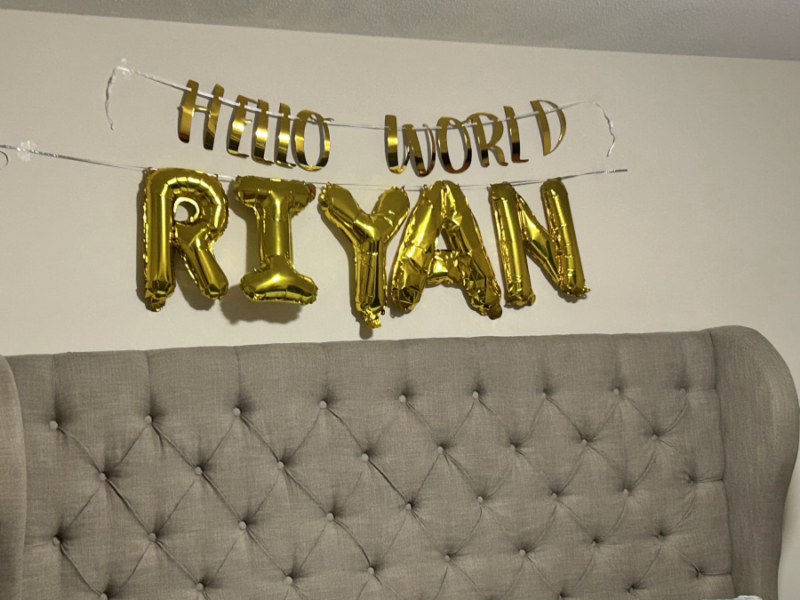
Page 3
Your Home Coming
09 January 2023
Dear Riyan,
We are so excited today as you are coming home. There is a beautiful flower bouquet and a yummy cake on the dining table waiting for you. Your bedroom is all set with a fresh sheet on the bed, your crib, your diaper changing station and all other stuff you might need. A similar set up has been made down stairs. Whenever you would like to have family time you might need them here too.
Ohh....I can hear the door of the garage opening. Your Papa brought you inside in the car seat. Dressed up in a white quilted dress and red woollen cap, you are looking so adorable. After cutting the cake, your Mumma took you to her bedroom to feed you. Simultaneously I saw your Papa put all your statistics of eating, Pooping and Peeing on the App he has downloaded on the phone. Mumma too shared the App to be on the same page.
My little cutie pie this is a tech world you have entered into. Try to learn and take all positive aspects of this modern world but discreetly keep away from its damaging factors which separates one human being from another.
Love you my darling,
Dadi
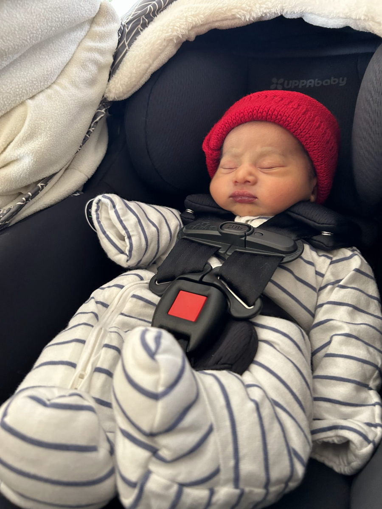
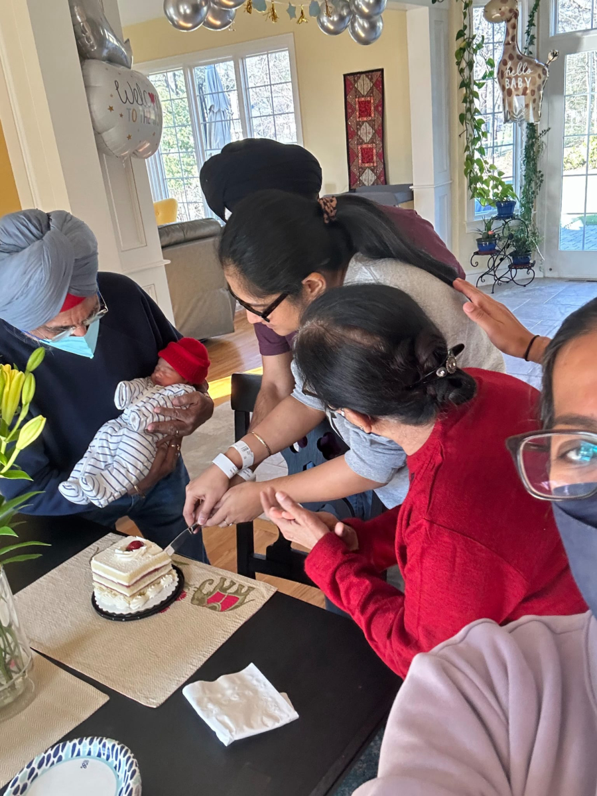
Page 4
First Visit to Doctor's Clinic
11 January 2023
Dear Riyan,
Today is your first visit to the pediatrician. It is very cold outside and you are too tiny. Your Mumma dressed you up in warm clothes and your Papa belted you up in your car seat wrapping you in a thick blanket. The doctor examined you thoroughly, compared your present body weight with your birth weight and was a little concerned. She wanted to see you again the very next day. She told Mumma Papa not to worry if you are eating and sleeping well.
My little prince, health is the greatest wealth you will need your whole life. May you grow up to be a healthy and charming young man.
Love,
Dadi
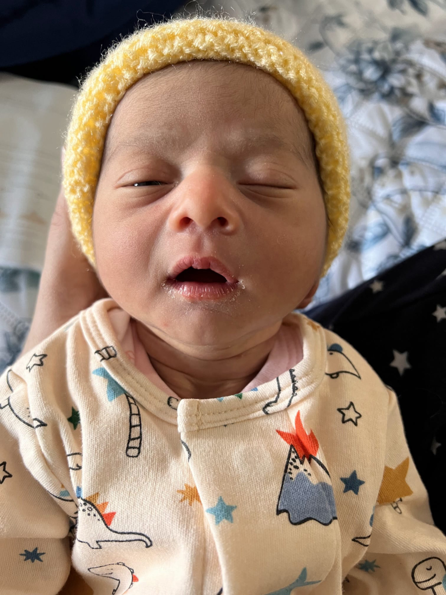
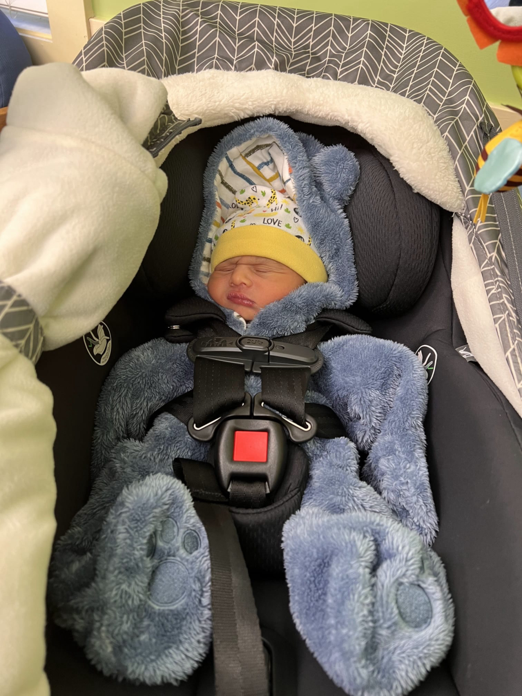
Page 5
Revisiting Dr Priya Malik
12 January 2023
Dear Riyan,
You are a fighter, this I knew from the day you were born. Today you have proved it too. Last night you ate well and were on the positive side of your weight gain. Your doctor was satisfied with the progress you made and told your mom to continue feeding you as she has been doing. Your next visit to your pediatrician is now scheduled after one week.
Tomorrow you have an appointment with your ENT specialist. At the time of your birth, hospital people examined you and found that you have a tongue tie. It is a very simple and common thing which normally occurs in many infants. As per doctor it is a simple procedure. She will just put a cut under your tongue where there is no nerve. Tomorrow is your first Lohri too. Hopefully you will be back from your doctor's visit and we will celebrate Lohri.
My dear little one, always remember problems do come in life but they go away with faith in almighty and with patience.
Many blessings,
Dadi
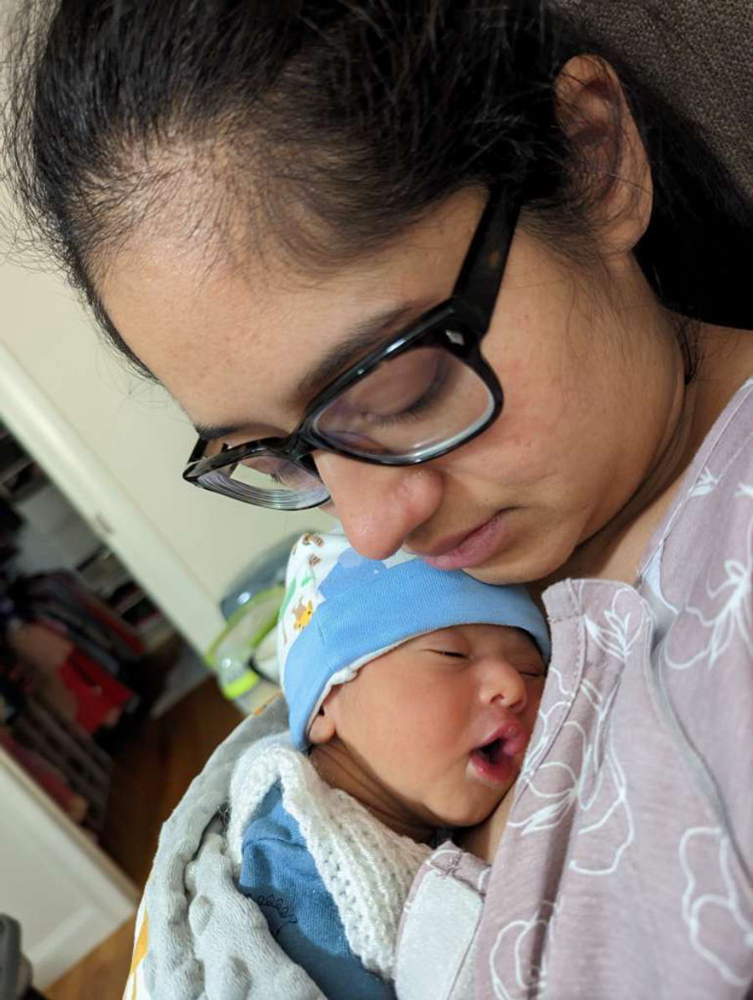
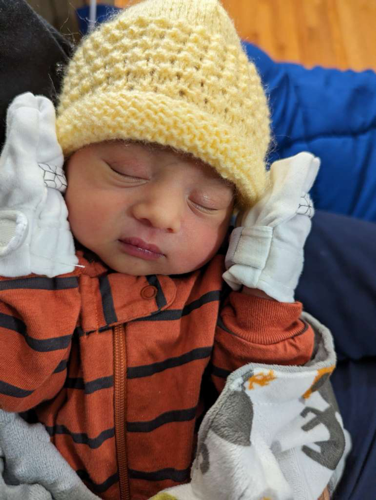
Page 6
Appointment with ENT
13 January 2023
Dear Riyan,
As I mentioned in my previous letter, you had an appointment with your ENT doctor today. Though it appeared to be a simple procedure, still I decided to accompany your parents to the clinic. I was concerned because you are just five days old and very delicate. Clinic people did not allow me to go inside with your Mumma and Papa. Sitting in the waiting hall I was praying to Waheguru that everything should go well. Your Papa kept us updated on our WhatsApp group.
Everything was going well — doctor put a cut and then tried to check it by putting her finger under your tongue. Suddenly you started bleeding from the place where she had put the cut. Your Mumma started crying bitterly. Your Papa too got tensed up. Your Dadu and me were also worried. Finally doctor could stop the bleeding, prescribed a few medicines, and we all came home. You are in pain and unable to eat. We have decided to celebrate your Lohri tomorrow on 14th.
My dear little one, you are too precious for all of us. May God bless you with a long and healthy life.
Lots of love,
Dadi
Page 7
Celebrating First Lohri
14 January 2023
Dear Riyan,
Last night was a sleepless and painful one for all of us. You were unable to take feed because of the cut under your tongue. We all were worried and concerned because milk is the only source to give you energy and keep you hydrated. As I have already mentioned, you are a fighter. Finally in the morning you felt a little better and had feed from your Mumma.
Today is Sangrand, the first day of our Indian calendar — an auspicious day that falls immediately after Lohri. We decided to celebrate your first Lohri today. Papa invited Neha Masi, Surya Chachu and Nidhi Bua for dinner. Arrangements for a bonfire and some popcorns and peanuts to be thrown in it had already been done. Evening was all good. We celebrated your first Lohri in a simple but ritualistic manner.
My dear little one, may you celebrate many many more festivals in your long, healthy and happy life.
Many blessings,
Dadi
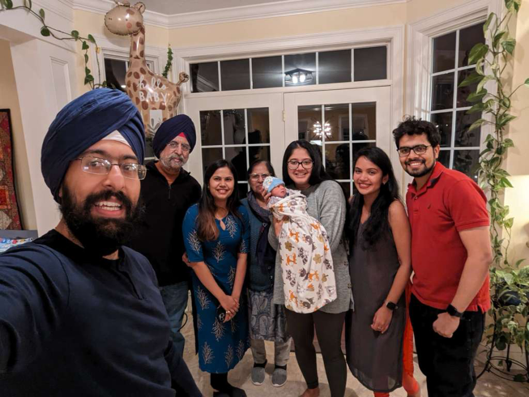
Page 8
First Meeting with Akki Masi
22 January 2023
Dear Riyan,
Today your Akki Masi came to meet you. She was in India, visiting her parents when you were born. A few days ago she reached back and was so excited to see you. Your mom and dad asked her to quarantine herself for some time as she had travelled a long way and you are still so small and delicate. Finally, after taking some clinical health tests, she is here to meet you — to take you in her hands for the first time.
Neha Masi and Akki Masi are both your Mom's best friends and are an integral part of the family. They love you so much. You are an adorable child — not only do our family and friends love you, but people who meet you for the first time love you too.
God bless you my little cutie pie,
Dadi
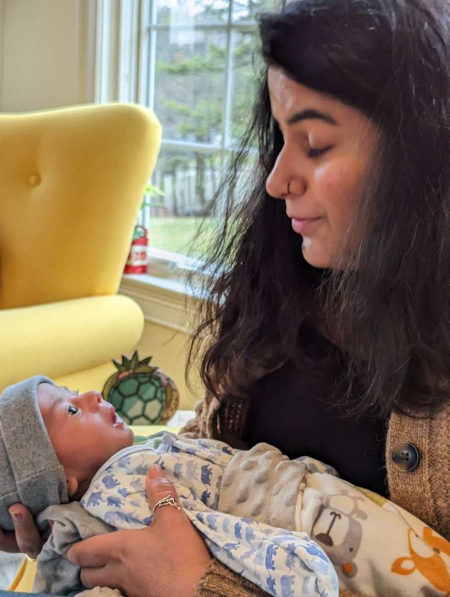
Page 9
First Visit to Gurudwara Sahib
28 January 2023
Dear Riyan,
You are three weeks old today. We decided to take you to Gurudwara Sahib for Babaji's blessings. There is no gurudwara in close vicinity — the nearest is in Connecticut, a 40–45 minute drive. It is very cold outside. Mumma has dressed you up properly in a warm dress. Mumma and Papa have also taken out Indian attire for Gurudwara.
Bhaiji at Gurudwara made a prayer for your long, healthy and prosperous life and distributed Prasad to all of us. Papa brought two packs of chocolates for the sangat present in the gurudwara.
My little one, may Babaji bless you always.
Love,
Dadi
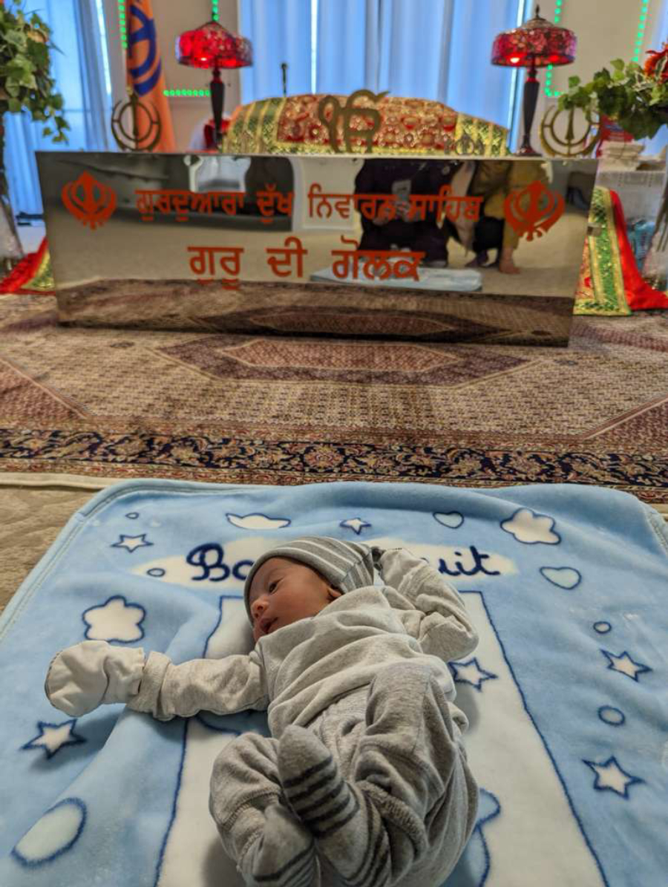
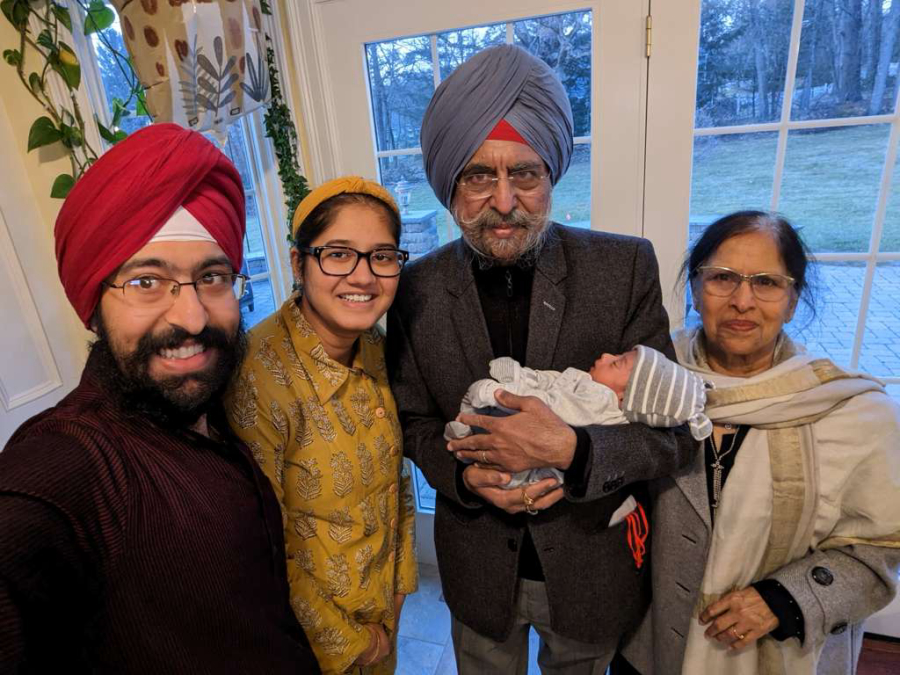
Page 10
Meeting with Bhashu Masi
31 January 2023
Dear Riyan,
You are adjusting very well to your environment and growing up with every passing day. Now you respond to our calling and enjoy listening to rhymes. Sometimes when you are tired being in your own room, your Mumma leaves you in our room. You look around to recognise the changed surroundings and play with your Dadu and with me.
Last two days you were busy meeting your Mom and Dad's old friends. Sunday morning Bhashu Masi came to meet you. We had brunch together. On Monday evening Aakash uncle, again your Mom's old classmate from Boston, came to meet you. They all love you a lot.
My dear little one, we all love talking to you and playing with you.
Many blessings,
Dadi
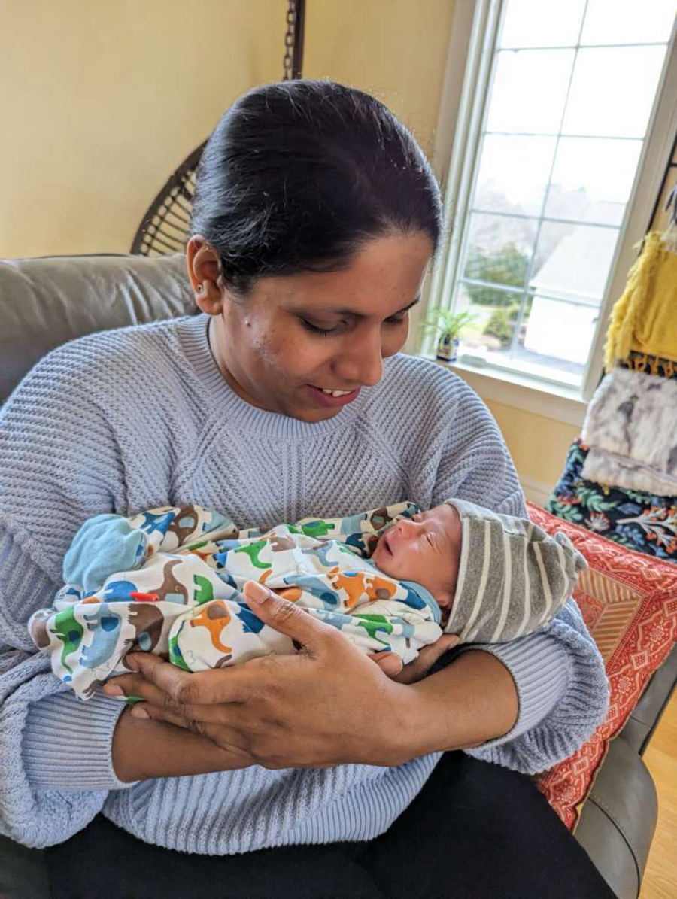
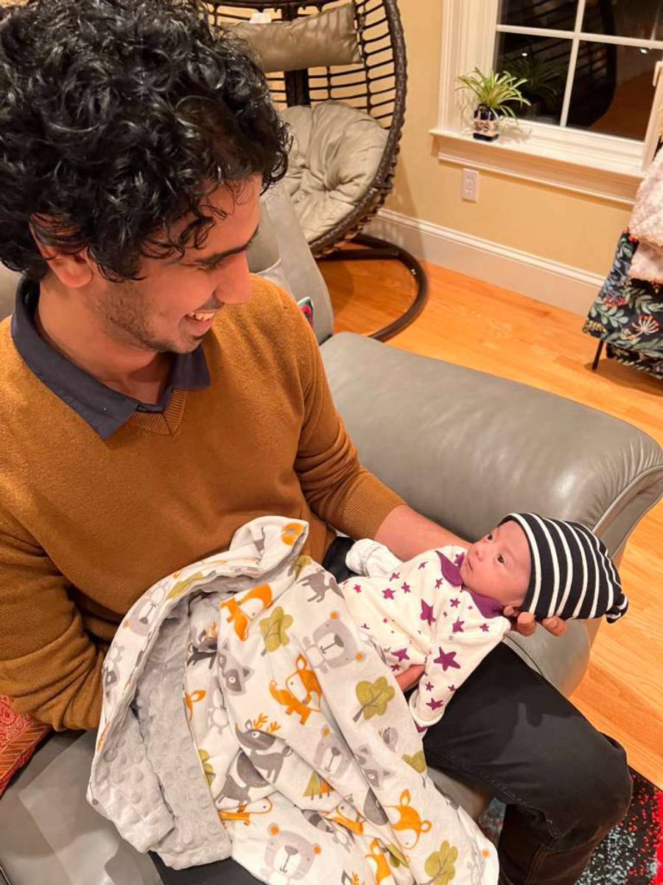
Page 11
Failure of Heating System
02 February 2023
Dear Riyan,
It was a very tough day today. The weather forecast predicted it would be extremely cold as polar winds were passing through your area. Your Papa was very cautious and made all preparations for protecting you. Suddenly in the afternoon the heating system stopped working and it started getting cold inside. Papa made emergency calls, put an extra heater in the hall and even went outside to check for blockages. The monitor was showing the temperature dropping slowly and slowly. Meanwhile Dadu wrapped you in his woollen shawl and tried to make you comfortable.
Suddenly Papa got an idea — he went to the basement and reset the heating system. It worked, and things started coming back to normal. Considering that this should not happen again, Papa called the company and scheduled to change the entire heating system of the house.
My sweetie pie, one has to be prepared for such emergencies when living in such harsh weather conditions.
Lots of love,
Dadi
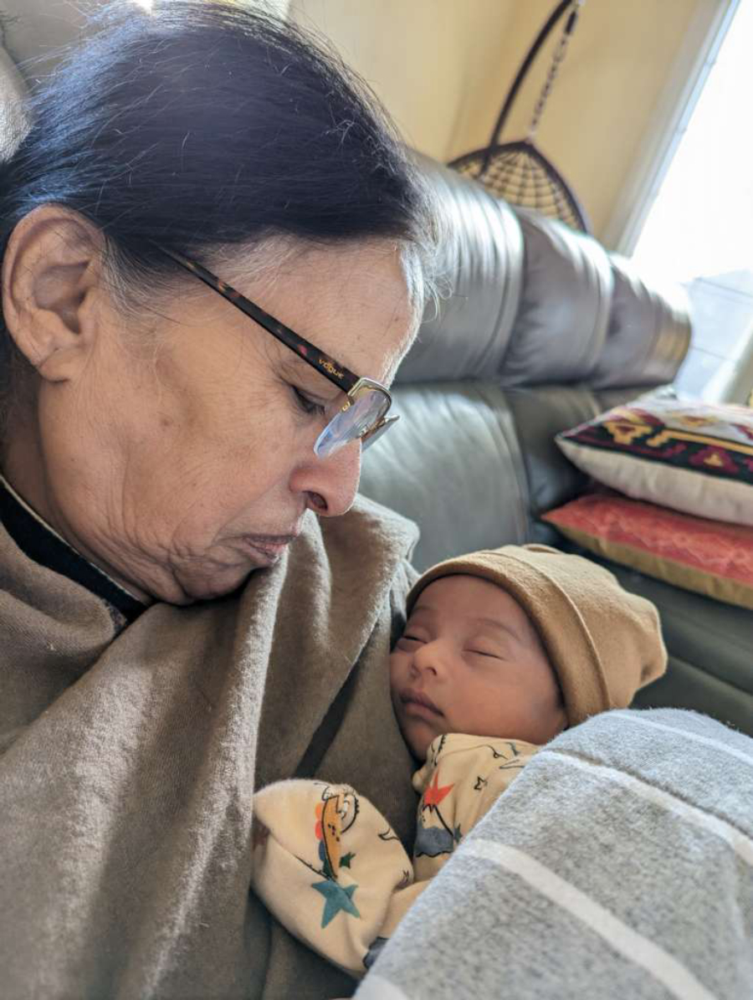
Page 12
First Month Birthday
07 February 2023
Dear Riyan,
You are one month old today! You have very well adjusted with your environment except your tummy problem. You are a gassy baby because of which you are uncomfortable sometimes and unable to sleep well. You have started recognising your Mom, Dad, your Dadu and me. Today is your one month doctor's visit too. Your doctor understood your problem and approved introducing gripe water so that you get relief from your colic issue.
Your Akki Masi and Neha Masi have brought a nice cake to cut and mark your first month birthday. Papa has bought a high-tech camera to take your pictures and there is a Google Photos group where all your pics are loaded.
My dear little one, many blessings from your Dadu and Dadi on your first month birthday.
Love,
Dadi
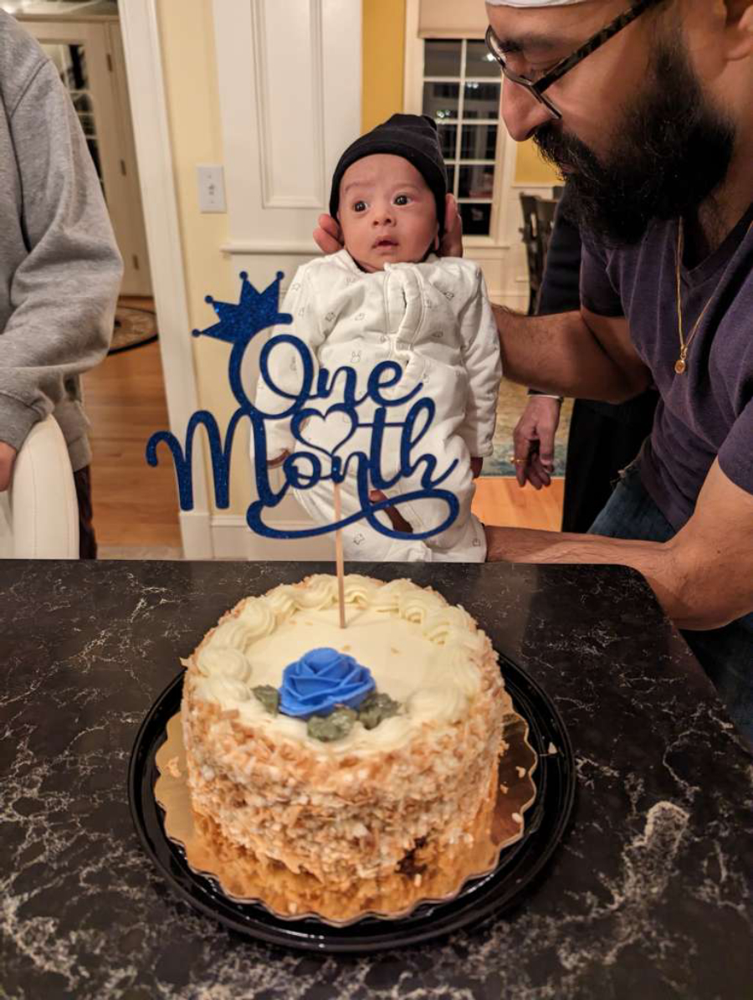
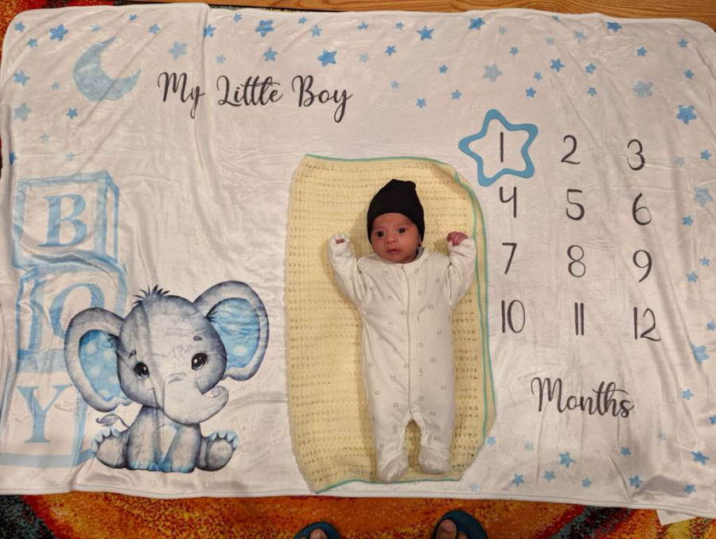
Page 13
Papa and You Slipping from Staircase
11 February 2023
Dear Riyan,
After celebrating your first month birthday, we are all enjoying your little giggles and playful activities. Your Mom Nidhi too is gradually gaining strength and is able to take care of you besides doing her other daily chores. Your Papa is a big support — he takes care of the entire family.
Today late evening we had an accident which involved you and your Papa. We all were in the kitchen making dinner when your Papa, who was coming down from upstairs, slipped a few steps and fell down. He tightly held you but got his own back hurt. The incident shook all of us deeply. We are thankful to God that He saved both of you.
My dear most precious little one, I wish and pray to God that He should always keep you safe and protect you from all sorts of unpleasant happenings.
Love,
Dadi
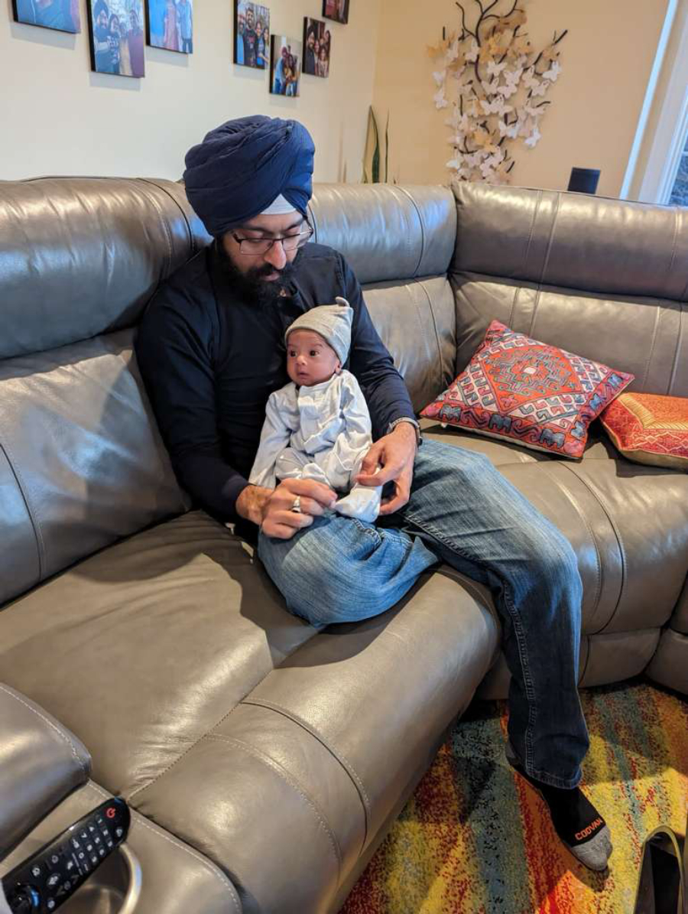
Page 14
Waiting for Nanima
16 February 2023
Dear Riyan,
Your Dadu and me have to go back to India to appear for our green card interview. I didn't want to go as you are so small and require constant care. Your Papa insisted that we should go on 20th February on our scheduled flight. Meanwhile he talked to your Nani Mumma who readily agreed to come here. She too was eagerly waiting to meet her little grandchild. Your Papa has gone to the airport to bring your Nanima home. We will leave on 20th but you will have a good time with her.
My dear little one, it is a blessing for grandparents to play and have good quality time with their grandkids.
Lots of love,
Dadi
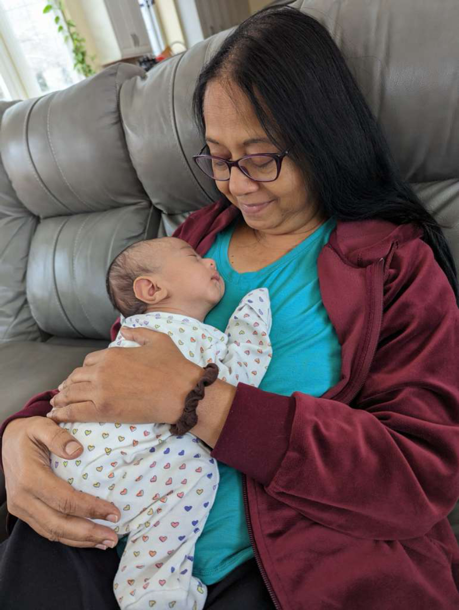
Page 15
Aditi Aunty, Karan Uncle Visit
18 February 2023
Dear Riyan,
Your Mumma and Papa have very close friends living in New Jersey — Aditi aunty, Karan uncle and their daughters Sara and Ahana. They are a very warm and loving family. They wanted to meet you and your Dadu and me before our going back to India. Since long they were trying to visit but due to certain health reasons could not finalise a trip. They stayed with us overnight and we all had lots of fun. Your Nanima met them for the first time but she too loved them.
Sara and Ahana wanted to take you in their lap and play with you. You are just one month old but still you could respond well to everyone's call.
My dear cutie pie, a strong bond of love with family and friends is very important for our existence.
Love,
Dadi
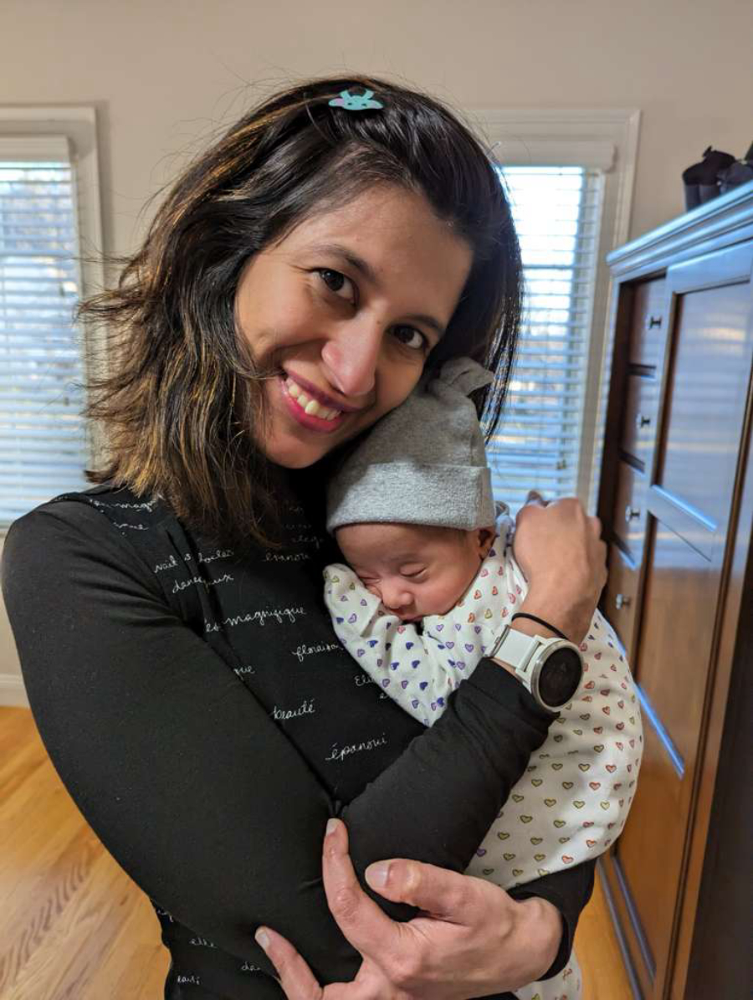
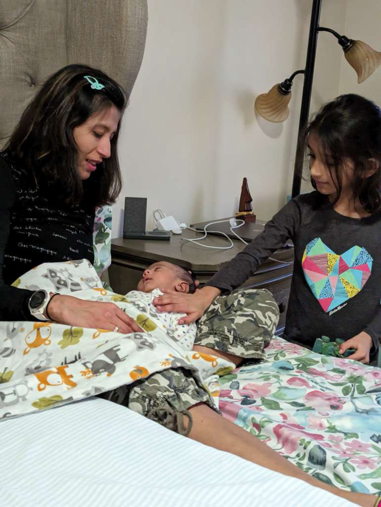
Page 16
Mumma's Advisor Meg Came
26 February 2023
Dear Riyan,
Today is a very special day as your Mumma's advisor Meg came to meet you. Meg is a very talented, warm and loving person. She took you in her hands and loved you a lot. She too is a Mom of a one and a half year old boy named Terry. Your Mom is associated with two labs — one headed by Prof Meg and another by Prof Rafael.
One has to work hard to get a doctorate degree. Your Mom's field of expertise requires a lot of experimentation and lab tests. All these scientific researches make our society a better place to live in. My dear cutie pie, one day when you will be a big boy and will start understanding these concepts, you will be proud of both of your parents.
Love,
Dadi
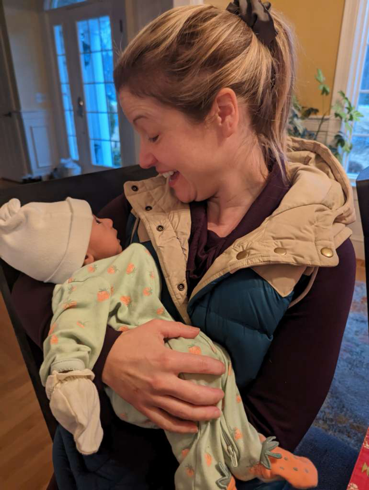
Page 17
07 March 2023
Dear Riyan,
You are two months old today. Though I am in India...I get updates about you from the Google album and by the regular video calls from your Papa and Mumma. I saw your pics with Mumma Papa's friends Kiran Sam and their daughter Arya two days back when they visited your house.
I came to know that Mumma's lab friend Darya presented you a toy giraffe which she knitted herself. This toy has been named as Gg by Mumma Papa and is your favorite friend.
I know you are having fun time with your Nani Mumma. She loves you a lot. Your second month birthday will be celebrated by your Akki Masi, Neha Masi, Surya Chachu, Nani Mumma and your parents.
Dear Riyan you are fortunate indeed that you are surrounded by so many lovely people who love you a lot.
Many blessings from your Dada and me on completing two months.
Love,
Dadi
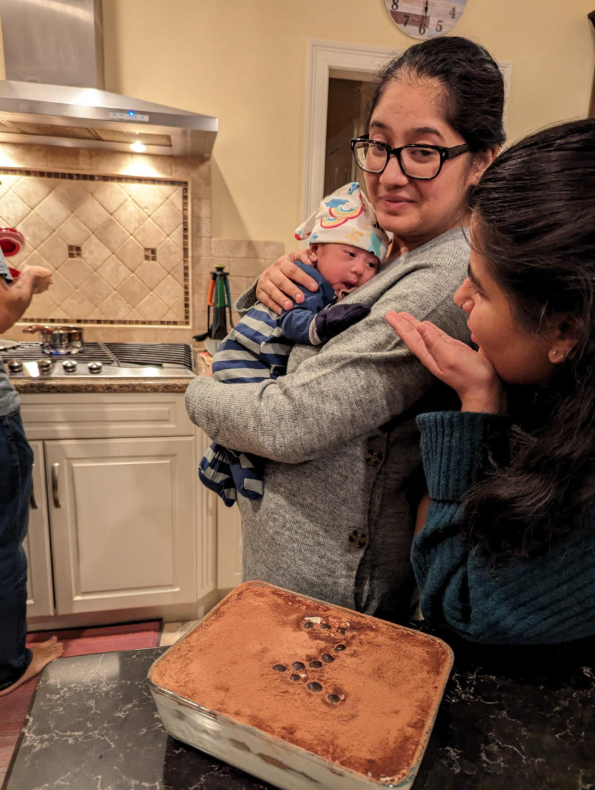
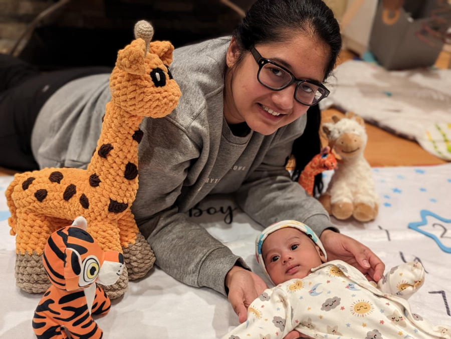
Page 18
13 March 2023
Dear Riyan,
Yesterday was the festival of Holi. In India we celebrate this festival with great fervor. This day signifies victory over evil. People put colors to all their friends and loved ones, sing, dance and offer sweets. Gujiya is an Indian sweet which people eat on this day.
You have also celebrated Holi with both of your Masis Neha and Akansha, your Chachu Surya and your Nani. Your Mumma and Papa were of course part of the celebration. They all put colors on your dress.
These colors contain chemicals and should not be put on your skin as you are too small and your skin is very delicate. My dear little one festivities are good for social get togethers and to bring happiness in one's life but the present form of celebrations have many health hazards which should be avoided.
Love,
Dadi
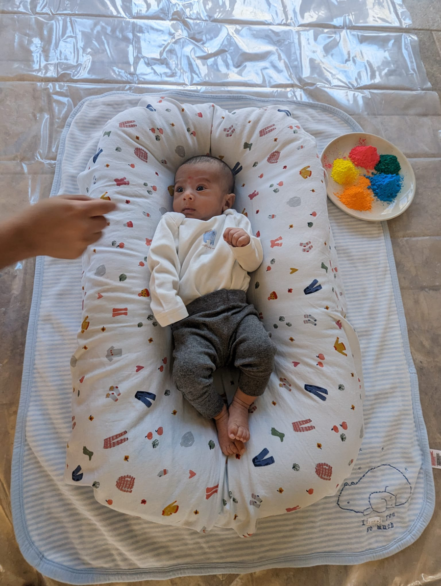
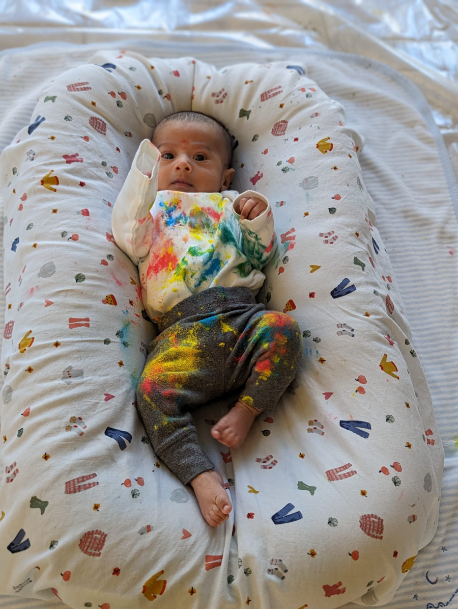
Page 19
07 April 2023
Dear Riyan,
Today is your three months old birthday. Your Nani Mumma is with you to be a part of your birthday celebration. Last week your Mumma's uncle, aunt and cousins Vraj and Divya came to meet you. Mumma's uncle is your Nanu's younger brother. So they named themselves Chini and Chanu. Divya stayed back to have some fun time with you. She wants you to call her Mazi — a different but loving word for Masi.
Neha Masi, Surya Chachu and Akki Masi are all there to celebrate your 3 month old milestone. Besides, Mom's friends Tom and Ana were also there. My dear little one you are growing among all your loved ones. I wish you always get love in abundance.
Many blessings and Love from Dadi and Dadu,
Dadi
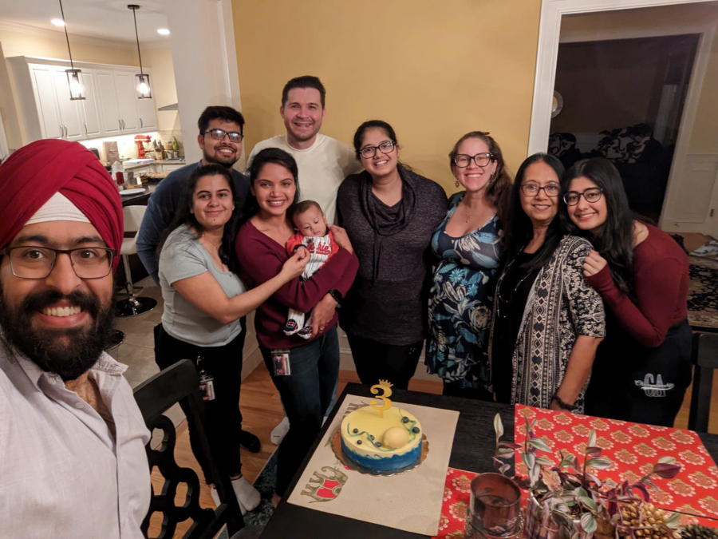
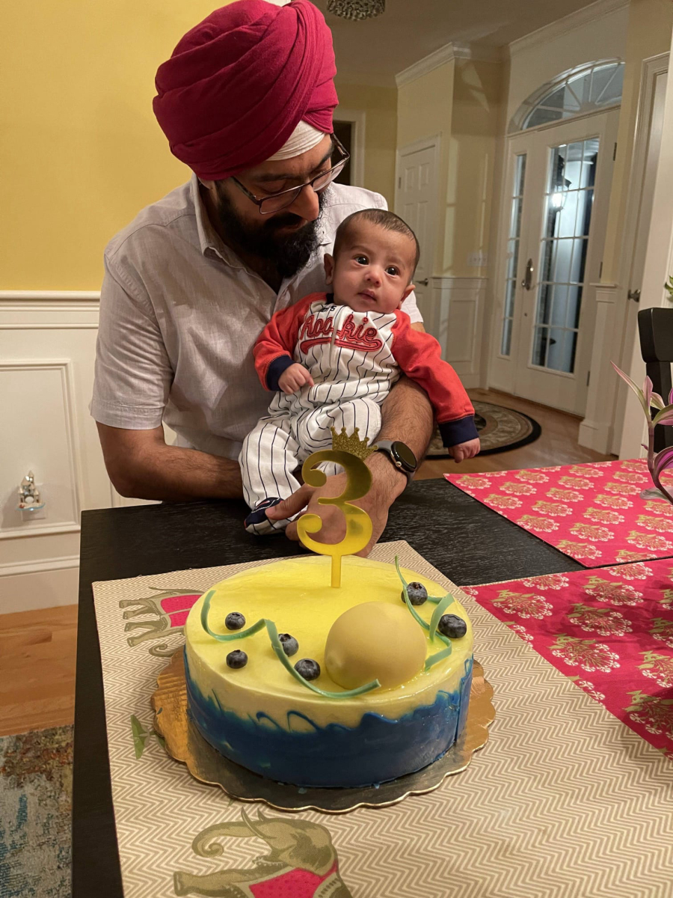
Page 20
15 April 2023
Dear Riyan,
April 13 is an auspicious day for all Indians. Month of Baisakh starts on this day. Sikh history has a great importance of Baisakhi. Our 10th Guru Gobind Singh ji started Khalsa Panth — the foundation stone of Sikhism was laid on this day. When you will grow up you will read our history and will feel proud to be a part of this faith.
In the US normally this Gurupurab is celebrated on weekends in the Gurdwaras, so that everyone can join and be a part of their heritage. Today on Saturday i.e 15th April your Papa, Mumma and Nani took you to the Gurudwara to celebrate your first Baisakhi.
Last week Janette your Nanny also joined and started taking care of you. Whenever your Mom goes to Lab, Janette and your Nani Mumma make you comfortable and have fun with you.
Wishing you a happy first Baisakhi,
Dadi
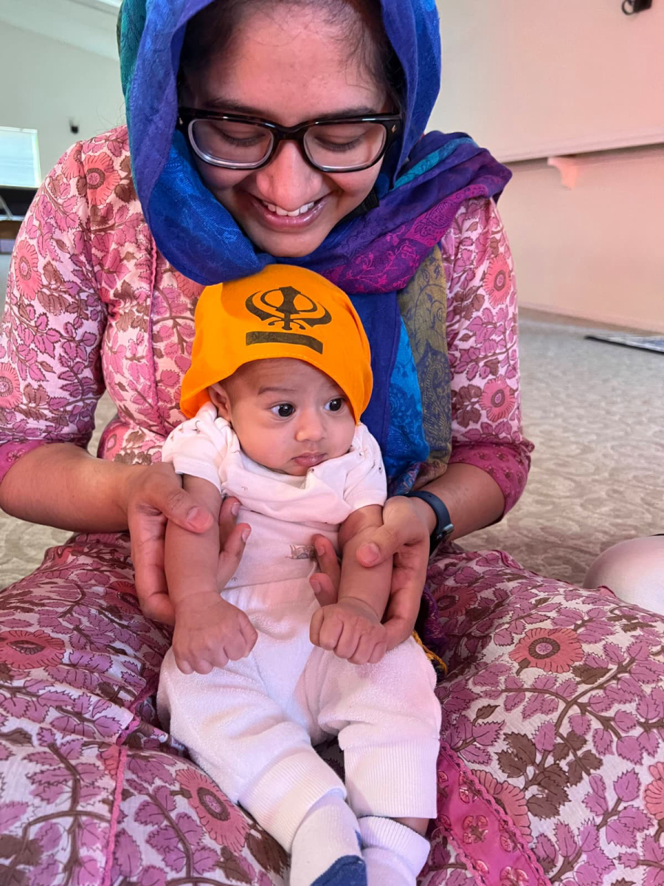
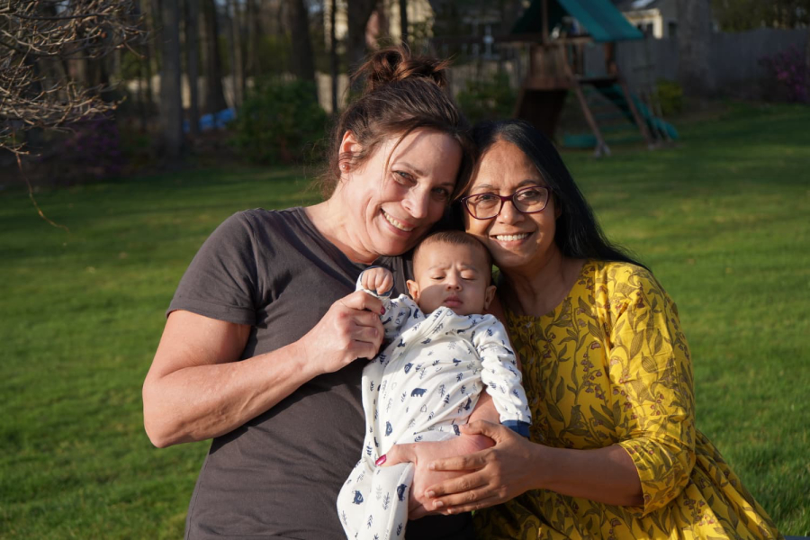
Page 21
28 April 2023
Dear Riyan,
My India visit was good but a bit sad too. Our very dear friend Arvinder passed away. Since last four decades we were very close and your Bua and Dad spent great time with her family. After getting our green card approval and bidding a last farewell to our dear friend I reached LA on 8th April.
9th April was your Reet Didi's birthday. After celebrating her birthday and spending some wonderful time with Ridam and Reet I reached Boston today. Your Papa was there at the airport to pick me up and to say goodbye to your Nani Mumma who is leaving for India today. Your Dadu as usual had some official commitment and will come here in the month of June.
I am excited to spend some quality time with you and to enjoy summers on the east coast. Reaching home, a glimpse of you made my day.
Lots of love,
Dadi
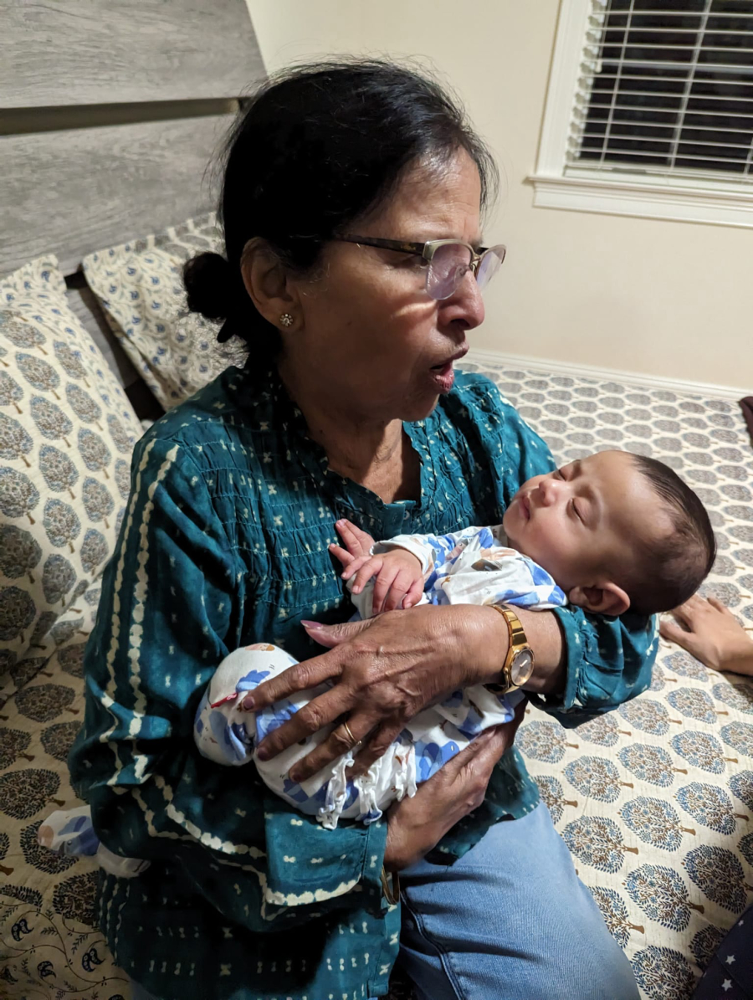
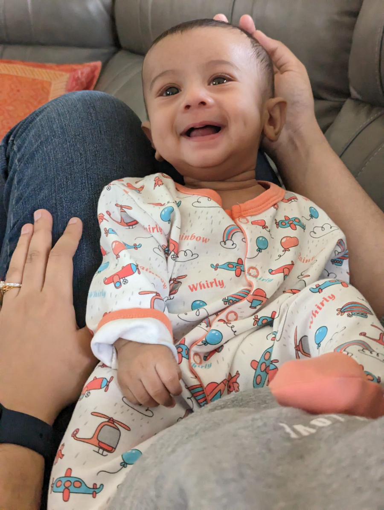
Page 22
07 May 2023
Dear Riyan,
Today you are four months old. Your birthday celebration is planned in the same manner — dressing you up, marking 4 months milestone on the sheet your Mumma Papa has kept for each month, cake cutting and lots of hugs and kisses from your Neha Masi, Surya Chachu, Akansha Masi, Dadi and of course from your parents.
This time we had an additional guest. One of Akki Masi's friend Kripani wanted to visit you. She too loved you a lot and had fun time with you. I was overwhelmed to see you sitting in my lap, cutting cake and very confidently holding your head.
My dear little one I wish that Baba ji bless you always and you have a long and healthy life.
Blessings,
Dadi
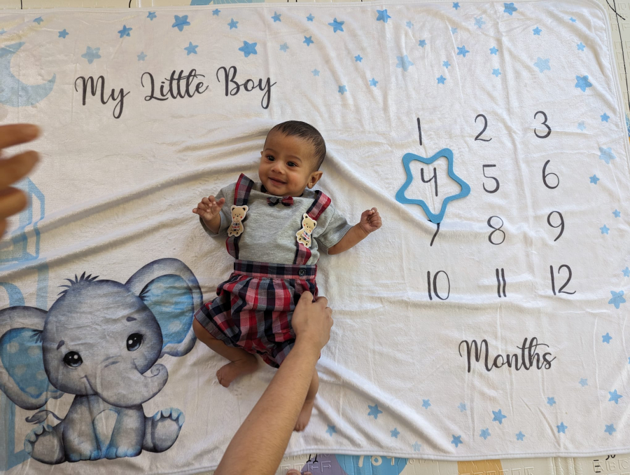
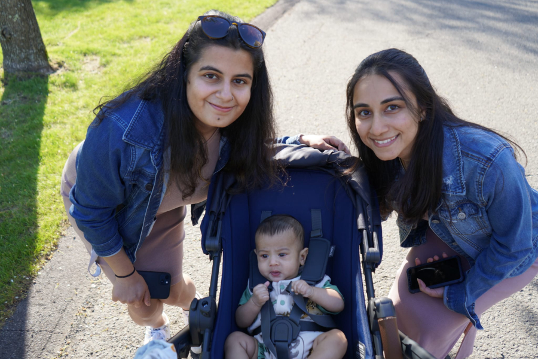
Page 23
13 May 2023
Dear Riyan,
Today is Mother's Day. This day is celebrated throughout the world with great pomp and show to show gratitude to all mothers. Today is the day when Nidhi your Mom is celebrating this day for the first time.
Papa got customised a poster with Nidhi and your photographs. Neha and Akansha brought flowers and cake to mark this day. Dadi wrote a poem as usual and sent it to Nidhi.
I wish this lovely bond of Riyan and Nidhi should always stay.
Love,
Dadi
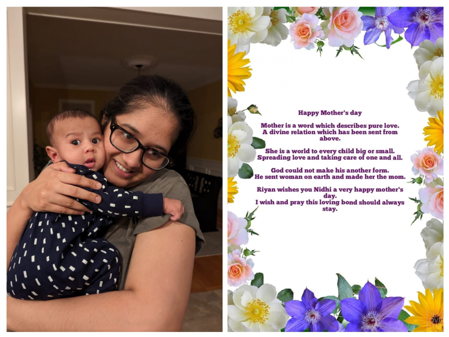
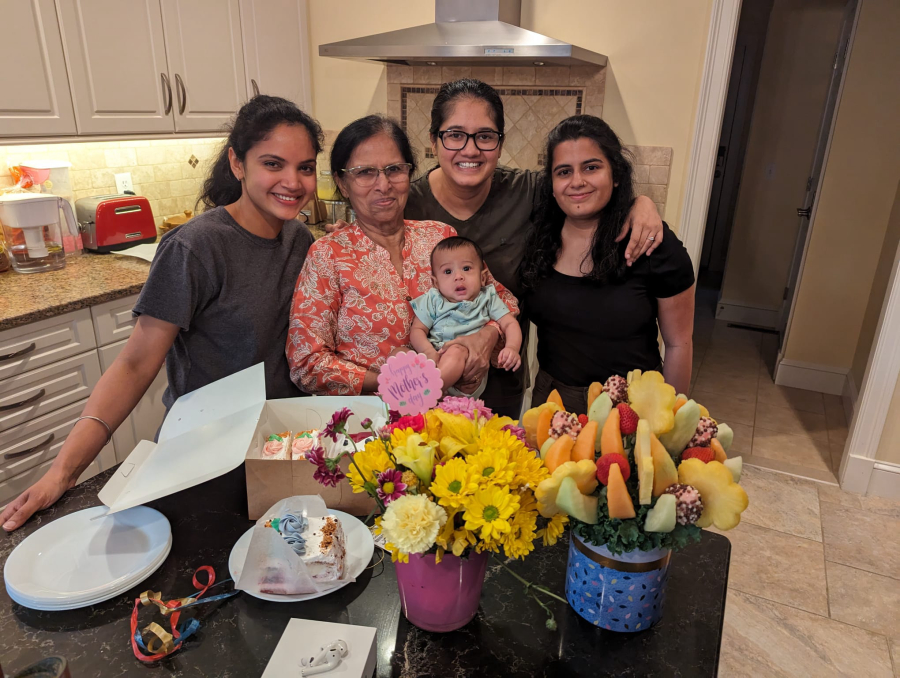
Page 24
25 May 2023
Dear Riyan,
Karan Nigam uncle is your Papa's very close friend. Both of them did their bachelor's degree from India and their masters from Rutgers together. Papa will tell you many interesting incidents of their long association.
Today Karan uncle, Manika aunty and Ananya didi who is just 2 years old have reached your Wilbraham house. They are going to stay with us for a week and want to have good time with you. They have specially planned a trip to meet you.
Ananya loved you a lot and wanted to be with you all the time. Both your Mumma and Papa are loving and friendly people and they have good and trustworthy old friends. You will keep getting their love when you grow up.
Many hugs and kisses,
Dadi
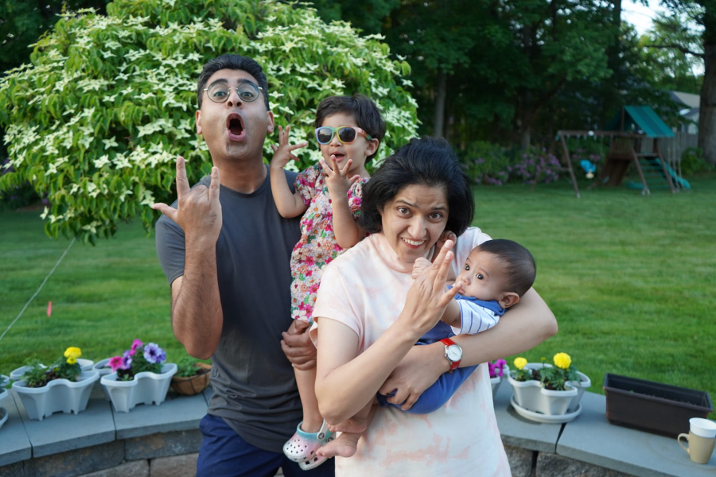
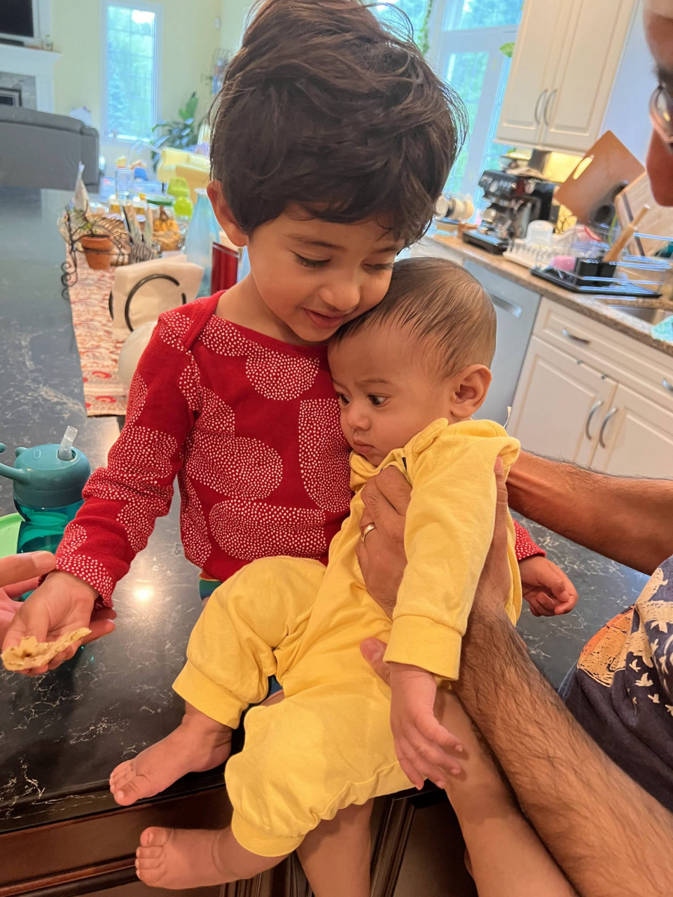
Page 25
08 June 2023
Dear Riyan,
Yesterday on 7th you completed your 5 months. Neha Masi and Surya Chachu as usual were part of the celebration. They both made special efforts, did some good baking to make your day very special.
Today is your Papa Aman's birthday. We all dressed up in the evening, had a photo shoot outside our house with you wearing a turban and then went to a Spanish restaurant in Hartford for dinner. This restaurant serves few delicious dishes in small portions called Tapas. Along with your Masi and Chachu we all enjoyed food there.
Doctor has allowed you to take solids now — Papa and Mumma took your cereal food which you love and relish. Last two days were full of activities and celebrations.
Love,
Dadi
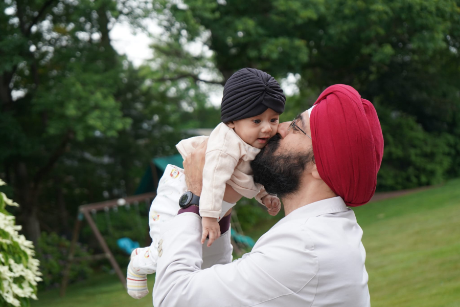
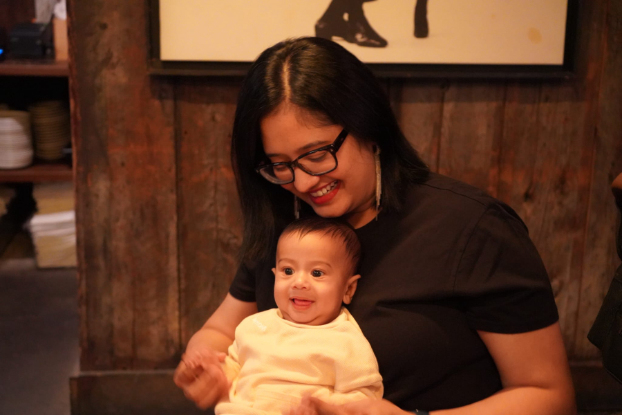
Page 26
18 June 2023
Dear Riyan,
Today is Father's Day — a very special day for your Papa. He is celebrating this day as a father for the first time. Your Mumma gifted him and you both a T-shirt marking the significance of this day. Also she got customised a picture frame of both of you.
Your old Nanny Janette is leaving due to certain personal reasons. Fiona your new Nanny has joined to take care of you — she is a young and very affectionate person.
Now you are able to sit for a while and show strong reflexes. Today we saw you crawling with your head down (froggy pose) on your favourite gadda — a small mattress made with cotton filling. It was an amazing scene. Normally children crawl when they are seven months old. You have proved your doctor's judgement true that you are ahead in your developmental milestones. May God bless you always.
Love,
Dadi
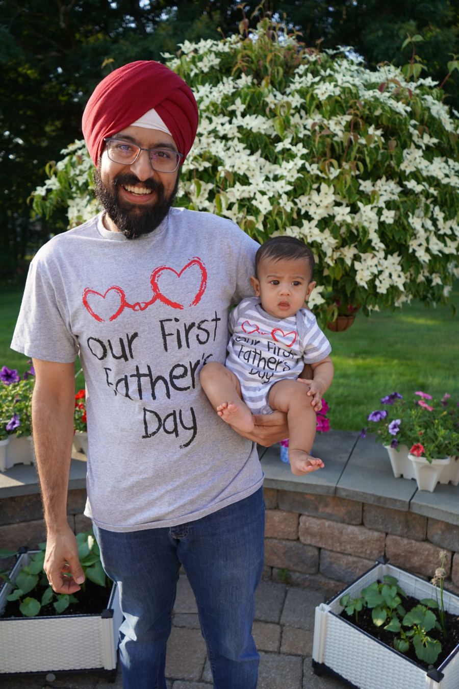
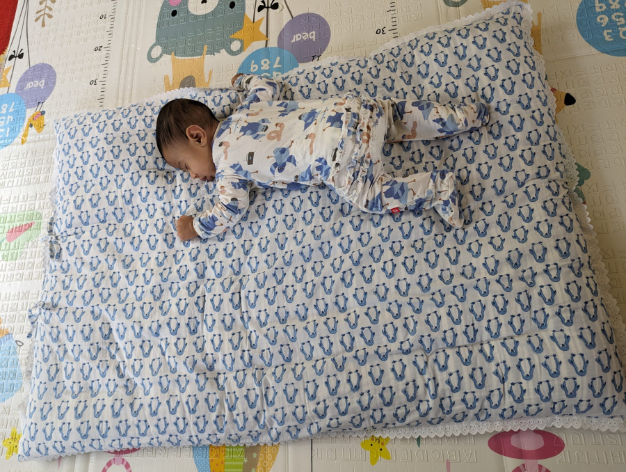
Page 27
29 June 2023
Dear Riyan,
Today is your Mom-Dad's 10th marriage anniversary — a milestone celebration. Two days back your cousins Ridam and Reet came to your Wilbraham house along with your Fufu. They have not met you even once after you were born. Both of them are so excited to spend time with you. You could also gel very well with them.
Your Bua is reaching tomorrow morning and in the evening you are going to meet Indu Bua, Mansirat Didi, Ridam and Reet's Dadi Mumma and senior Fufu. We all are so excited to have our extended family with us. We are going to have Rakhi celebration also — it is your first Rakhi. Reet Didi will tie you rakhi on your cute little wrist.
Today after a ritual celebration of cake cutting and presenting cards and flowers bouquet to your Mom-Dad we booked a restaurant for dinner. It was a day very well celebrated.
Many hugs and kisses,
Dadi
Page 28
07 July 2023
Dear Riyan,
You are six months old today. To celebrate this very special day your Bua, Fufu, Ridam, Reet and their grandma are all with us. Devinder Dadu too flew all the way from California to meet you. Your Mom and Dad organised a lunch party at Priya restaurant — besides family, few friends also joined us there.
In the evening the same old team — Neha Masi, Surya Chachu and your Bua — were on their toes to inflate balloons, put banners, arrange cake and to gift you appropriate dresses for the day. This time they have a very enthusiastic little helper: your Reet Didi. It is a very hot day so your Fufu decided to make a grilling arrangement in the backyard.
My little darling your Dadu and I will be leaving for Delhi on 21st of this month. Ridam and Reet are your first cousins — they love you so much. Always remain connected with them.
With many hugs and kisses, my sweetie pie.
Lots of love, Dadi
Page 29
19 July 2023
Dear Riyan,
Last week has been a very hectic one. As we were packing our bags to go back to India, Dadu's college friend Jasbir Sandhu and his wife Manjit wanted to visit us. They reached here on 15th and were with us for two days. Then came your second cousin Honey and his wife Tanya — yes, a big cousin of yours! Sanjeev Dadu and family are also a very close friend of ours. We are meeting them somewhere near Connecticut for lunch. Aman will drive us there.
You are too small for such a long drive so you will remain home with your Mom. It is really difficult to leave you my little darling and go back to India but your Dadu has his official commitments and I cannot leave him alone for a long time. I will keep writing to you from there and very soon will visit you again.
Love,
Dadi
Page 30
05 August 2023
Dear Riyan,
Your Mom-Dad's friend Rameesha and Kritesh are getting married today. They have arranged a small party in the backyard of their house with some very close and selected friends. You are now comfortable sitting in the car seat and attending a formal function.
Your Mom dressed you up in an Indian ethnic dress, put a turban and clicked some beautiful pictures. I heard that the party was a wonderful one and everybody wanted to meet you and play with you. You too enjoyed meeting friends.
Here in India we are doing good but missing you a lot. Hope to see you soon.
Love,
Dadi
Dear Riyan,
Today you have completed 7 months. You are comfortable crawling on the carpet in the big room. My dear it is good and very satisfying to see you so cautious of all your movements. I can see a very positive personality trait in you. I am sure you will not do anything in haste in your life. So proud of you.
Your birthday party is planned as usual. Your Masi's and chachu are always on their toes to plan your birthday celebration.
Many blessings today and always.
Dear Riyan,
You are growing big very fast. When you started crawling, you were only comfortable in the family or big room as your parents call it. Family room is now renamed as your play area. All your books and your toys are in that room. Fiona makes you crawl and play in that area only. Since last one week you are on a spurt to explore other areas of the house and to try many new activities. Last week you came out of the big room crawling and reached near kitchen area. Today you went to basement and loved crawling on the carpet area.
Another activity which you love is to crawl on pool table. Your Papa runs from one corner of the table to another to protect you from falling. Today you showed some signs of eating on your own. My dear little one I am missing your these lovely milestones. May God bless you always.
Dear Riyan,
Today you tried standing on your own by holding edge of the coffee table and sofa. It is a sign that you will walk soon. I have noticed that you are a very cautious child like your Dada. All your activities are very carefully planned. Still your parents and Fiona is always near you taking good care of you.
Yesterday you crawled to the kitchen area and finding dishwasher open tried climbing on its open lid. Nidhi immediately made you come out of it and closed the dishwasher. My dear cutie pie I love talking to you on the video call and to know your new updates.
Love you so much.
Dear Riyan,
Today you are eight months old. As usual your Neha Masi, Surya Chachu and Akki Masi are there with a cake to celebrate your big day. On your every month's birthday your Mumma Papa put a sheet highlighting how old you are on that particular day. This month your Papa decided to hang that sheet on the wall to highlight your this birthday.
You are ahead of your peers in all your milestones. As per your doctor you are able to do activities equal to 9 to 12 months old children. You can comfortably hold the cube you play with, and stand. It is a great delight to see you crawl, stand and try to move and your MomDad helping you to do that. My dear little one always try to be ahead of time, ahead of your developmental milestones.
May God bless you and your parents.
Dear Riyan,
With every passing day you are becoming active and putting your parents on their toes. You have started climbing stairs. One elder person needs to be with you to keep watch on you. If left on sofa you start cruising it from one corner to another. Aman keeps running after you so that you should not fall.
Another activity of yours which makes Nidhi and Aman alert is that you pluck leaves of all the plants around and start throwing them on the floor. Nidhi has to put all the plants up so that they are out of your reach. My dear Riyan plants are important source of our living. They provide us with food and above all oxygen for us to breathe. Your parents keep teaching you these important facts of life.
My dear when you grow up, be a nature friendly person and protect your environment and mother earth.
Dear Riyan,
Nidhi wanted to start your swimming classes in the summers only. I was a little apprehensive thinking how a small child can go to a water pool but she explained me that these classes are with the parents and it is essential to take out a fear of water from the child... so she registered you for the class and last weekend she herself took you for the swimming. Being with Mom and in the water made you very happy. You thoroughly enjoyed the activity.
Another fun filled time is when you go to basement and run and play on the pool table. You pick up a ball and try to put it in the nearby pocket.
We all are overwhelmed to see you doing all these activities.
Dear Riyan,
Your Mumma always planned a healthy and nutritious diet for you. You liked banana, oranges and watermelon but did not relish berries. To develop your taste she made a puree of these berries and started feeding you. Puree of blue berries makes your tongue and lips blood red.
A strange incident occurred today. Papa uploaded one of your pictures on the group with red stains on your face. Your Nana was in India... he saw your picture and thought that probably you got hurt and had blood on the face. Worriedly he called me. Incidentally I had a video chat with you and knew that no such incident has happened. I pacified him and assured him that our little darling is fine.
My dear you are lucky that you have a family which loves you a lot.
Dear Riyan,
You are nine months old today. Standing with the support of your block and wearing a checker shirt you looked very cute. Same team of Masis and Chachu were there to celebrate your special day. Highlights of your development is that you try climbing sofa without help and when your Mom takes you for bath you try to stand on the tub. We all love your activities but fear that you should not fall and should not get hurt.
Happy Nine months my dear.
Dear Riyan,
This weekend is a very special one for you. With all your dear ones — Neha Masi, Surya Chachu, Akki Masi and your Mom Dad — you are going for a long car drive. Cape Cod is a peninsula in the state of Massachusetts. Your Mom Dad booked an Airbnb for everyone's comfortable stay, made enough arrangements for weekend vacation and boarded their car.
It was real fun for you as you were travelling so long for the first time. You liked this new accommodation and crawled in the whole house. We are continuously getting pictures of you visiting sea beaches and playing with your dearies. May God bless you with abundance of fun and happiness in your life.
Dear Riyan,
Every year this day is celebrated as Halloween in the US. People decorate their houses with carved pumpkins and children dress up in different characters and go for trick or treat. It is your 1st Halloween. It was decided that you will dress up to be Thor and rest all adults including your Mom Dad and Masi Chachu will dress up wearing Marvel characters.
Your Mom Dad planned a photo shoot on 28th. This included your pictures in the fall season. On 29th your parents took you for a t-shirt choice. Coloured t-shirts of Harry Potter's 4 different houses — Gryffindor, Ravenclaw, Hufflepuff and Slytherin — were put at a distance in front of you. They wanted to know which one is your favourite house. You crawled towards the red t-shirt which is Gryffindor!
My dear little one, festivities of different places have their unique significance. When you will grow up your parents will update you with the information relating to this land.
Dear Riyan,
You are ten months old today. Besides regular cake cutting and celebration, the important highlight of the day is that now you crawl throughout the house and love exploring new things. Papa's office attracts you a lot. You quietly enter his room, want to sit on his lap and want to know how he works on his computer. A telescope lying in his office room is also a centre of attraction for you. My dear little one you are exactly like your father. He too was a great explorer when young.
Dear Riyan,
Diwali is a great Indian festival. In India we celebrate Diwali with great pomp and show as Christmas is celebrated in the western world. A week long celebrations are held before and after the day this festival falls. It's your first Diwali this year. Your Mom's Grad School friends Chanchal and Sanjana live in Boston. They invited you to come to their house for the festival celebration. Later coming back to 5 Kensington Drive a grand Diwali party was organised with the same old friends Neha, Surya, Akansha, Nidhi and some of your Mom's Lab Mates. Dressed up in an ethnic attire everyone lit Diyas and candles, burnt crackers and had a grand party.
Festivals give us pleasure and joy, make us socialize with people and we say good bye to our monotonous and stressful life for a short while. My dear Riyan the thumb rule to today's hard life is to take small breaks whenever needed and enjoy those moments to the fullest.
Dear Riyan,
You turned eleven months old today. Your special day today could not be celebrated with great pomp and show as your Papa is still COVID positive. Both your Masis and your Chachu were strictly instructed by your Mom Dad to keep distance as this is a highly contagious disease.
When I video chatted with you I was amused to see you enjoying presence of your Mumma Papa and Fiona. Mumma made a small aloo paranthi (a potato filled wheat roti) and a sabzi of peas and potatoes. She was feeding you small bites and I thoroughly enjoyed the beautiful scene.
Later Papa uploaded few pics in which I can clearly see your one small newly erupted tooth. My little one, may God keep you safe and healthy and may you always enjoy company of your dear ones.
Dear Riyan,
This week was full of fun activities. Your weekend Nanny EL is a very active, playful and loving person. She keeps trying new things for you. Today when she came in the morning she made a tunnel with your mat and made you hide inside it. You played a hide and seek with your Nanu. He too loves playing with you.
Two days back you started walking with your walker. You were already crawling and exploring new things in the house but the walker helped in your exploration spree. You went to your Mom's closet and started throwing all the piles of clothes on the floor. Finding Nidhi so upset I pacified her by telling a similar incident of your father who messed up my almirah. So history repeats itself!
My dear little one these are so cute activities of yours which we all love. May God bless you with great intellect and exploring skill.
Dear Riyan,
Today is your first Christmas eve. Living in a country where majority people follow Christianity, Christmas is a big festival. I truly believe that these festivals bring people closer to each other. Connected by internet, world is a global village now — Diwali is celebrated in the US also and we Indians enjoy Christmas thoroughly.
Neha, Surya, Akki, Aman, Nidhi and your Nanu ordered similar type of Pajamas and you were made to wear the red dress of Santa Claus. A big Christmas tree is standing tall in your family room all decorated with lights, bells, balls and other buntings. Every time you go near the tree you pull one of its decorative items and then ask your Papa to tie it again.
My dear little one I have found you to be a very loving child who wants family and friends together. Always be so loving.
Dear Riyan,
Today was a very difficult day. Early in the morning you woke up playful and happy. When your Papa video called us you were playing with your favourite toys. Your Nanu, Masi Mumma and Papa were all around. Your Dadu and me too were enjoying your little lovable activities of saying Hi and Bye.
After an hour of our switching off from the call, your Papa informed us that you fell down from the big room sofa and little blood oozed out from your nose. Aman and Nidhi were taking you to the emergency. Your Dadu and me got so upset and kept praying to God that our little precious Riyan should be absolutely fine. Nurse thoroughly checked you and found you absolutely ok. Doctor too confirmed it and sent all of you home.
My dear little Nona Puttu these incidents warn us to be more cautious and to keep faith in God.
Dear Riyan,
Today you have completed one year of your life. It is your first birthday. Your Mom Dad, Masis and Chachu are all excited to make your first birthday celebration a grand one. They all joined hands and decorated the entire house with red, yellow and orange balloons. You too were made to dress up in the same colors with a Pooh T-shirt.
I as usual wrote a poem for your first birthday and sent it to you. Your Papa got framed your picture and poem and decorated in front of the banner of your name. A cake smash photo shoot has been planned for February 6th. For today Papa and Mumma invited some of their friends and ordered a beautiful cake and food from outside.
Weather today is very rough and there is a probability of a storm. Many of the invited guests could not reach for the party because of the harsh weather conditions. My dear little one, many blessings from Dadu and Dadi for your long, healthy and happy life. May you enjoy each and every moment of your life.
Dear Riyan,
After turning one you have started showing many different interests and tastes. Your Mom has been very particular that you should not be given salt and sugar till one year, so you didn't know the taste of salty or spicy food. One day you saw your Neha Masi eating aloo bhujia and other people eating Parle G biscuits. They offered you too a little bite. Now these are your favourite foods!
You know where in the pantry they are kept. With your finger you point towards that side and want your favourite food. If by chance a bit of bhujia fell on the ground... you don't want to waste it... you will lie down on the ground and pick that piece with your tongue.
Cutie pie, your these activities we love.
Dear Riyan,
Your parents were worried and concerned about your erratic sleep cycle. Sometimes you slept in between your Mom Dad on their bed. Sometimes you wanted to cling to your Mom or Dad the whole night. This disturbed theirs and yours — not only night but day also.
Finally your Dad consulted a child sleep coach who suggested that you should sleep in your crib with your favourite stuffies. It took a few days to set your routine but finally you adopted the system and started sleeping holding any one of your stuffies. Later on it was a regular practice two times a day — any one of your Mom Dad or Nanny took you to your Mom Dad's bedroom and left you in your crib with all your stuffies. Lights were switched off, curtains were put, sound machine was switched on and they left the room.
Outside from the camera fixed on your crib they kept observing you. Firstly you played and talked to your friends, then gradually you lay down and slept. Being a smart kid, you could make out where the camera was!
Dear Riyan,
Your Papa has to go to South Africa for a week as a part of his eMBA program. He didn't want to leave you and your Mom all alone here in this big house. He got our tickets booked and after taking a direct flight from Delhi we reached New York on 10th of March. Aman picked us up and drove us to 5 Kensington Drive where our little Riyan lived.
Reaching here we saw you crawling and moving with a walker. It seems that you are just ready to walk on your own. Very soon you became friendly with your Dadu and me. You are able to speak and communicate very well. As it is difficult for you to call me Dadi... you decided to call him Dada and me Da. Listening to rhymes, songs and stories is your favourite time. I too loved singing new rhymes in English as well as in Hindi. Your Mom is very busy with her research work so I took over the kitchen's management. Home made yoghurt is added to your daily meal which you have started loving.
Dear Riyan,
You have a family of stuffed toys. Each one has been given a special name. Your favourite dog is Dino, Hedgehog is Marvin, and Sterny your Bunny is the one Papa brought from NYU Stern when he went to attend his classes. A beautiful knitted Giraffe is your Gg, and a small black and orange striped toy is the Tiger you love. There is an endless list of such toys lying in your crib too.
Before sleeping and early in the morning you talk to your loving friends, share your little anxieties and pleasures with them. It gives us so much happiness to see you kissing all your friends and even making us kiss them. My dear little one it is a real fun playing with you this time when we visited your Wilbraham house. May God always keep you healthy and happy.
Dear Riyan,
I prepared dal parantha for your dinner today. I wanted your Mom to make you taste a bit of freshly home made yoghurt. You tasted a few spoons of yoghurt, liked it and finally started splashing it all around. I could capture these beautiful moments of utter mess on your face, your clothes and your Mom's clothes.
Google album could immediately upload videos and pictures taken by my camera. Papa who is on his eMBA educational tour to South Africa saw these pictures and was utterly amused to see his little darling's fun activities. Dadu and me too were elated and had lots of fun.
Keep us making happy in future also.
Dear Riyan,
You are a keen observer — this I knew from the very beginning. Today you proved that. Two little planters were lying on the dining room window. You could reach those plants and off and on wanted to touch them. They are ceramic pots and could be unsafe for you.
Keeping in mind your safety I thought of transferring those pots to the window in your living room, where I thought you could not reach. Your eyes followed my movement and within a second you were there touching those pots.
I love your these activities my little naughty darling.
23 March 2024
Dear Riyan,
It is really amazing to see you growing. Every day opens up a new dimension of your personality. Reading books and listening to stories are your favourite pass time. As I mentioned, you have a family of stuffed toys. Marvin is a hedgehog. Today while reading a book you wanted your Mom to again and again open the same page on which there is a picture of a hedgehog. You said you want to see the Marvin. In another book you identified stars and associated them with the ones visible in the sky at night. My dear little one you astonish us all with your keen observation and sense to associate two identical things.
Love you cutie pie,
Dadi
25 March 2024
Dear Riyan,
You might get astonished over the fact that all the dates on the emails posted to you have date first and month later on. This is of course a different system than the one normally Americans follow. They write month and then date. In India we have been taught to write date this way. Your Mumma, Papa and your Bua and Fufu, were all raised in India but after living in US for so many years they learnt and got accustomed to American style of writing the date. Many other things like car driving, measurement of temperature, length and weight are different in America. You have to follow the system of the country you live in but should also understand the concept which is been followed elsewhere.
Love,
Dadi
30 March 2024
Dear Riyan,
Today we all had a wonderful time. It was a bright, sunny and warm day and we decided to go on a walk. Suddenly I thought of making you walk on the road. The sun was at our back so our shadows were long and clear. You enjoyed looking at those shadows and was greatly amused. You didn't want to hold anyone else's hand. Everyone was overwhelmed to see you walking. Dear Riyan, I wish you keep marching ahead in your life.
Lots of love,
Dadi
2 April 2024
Dear Riyan,
Your Mom loves gardening and she has decorated your house with many indoor plants. Here in this area where you live-in it snows 4 to 5 months of the year. Plants require very less water when kept inside the house. Your Mom waters them once a week. When your Dadu and me reached here this time, in the month of March, Nidhi delegated this duty of watering the plants to me. The very first day I started watering the plants holding you in my arms. I told you that plants are happy now and are thanking you. From the very next day you wanted to continue with the process again and again. Finally to save your Mom's plants from being over watered we started hiding the water can telling you that Katty has taken it from window and Dadu will go and snatch it from her. My dear little one I am sure you will grow up to be a great lover of nature. Will protect it and will help making our mother earth better.
Lots of love,
Dadi
5 April 2024
Dear Riyan,
Since last 2–3 days you are not keeping well. Though it's a simple cold and cough with little fever but you are too uncomfortable because of running nose and sore throat. We all are upset because you are not eating anything and crying a lot. Your Papa postponed all his office meetings and your Mumma deferred her lab practicals and consulted your paediatrician Dr Priya Malik. Your Dadu and me too are not feeling good to see you in this state. We prayed every day that you should get well very soon. Your Nanny Fiona is concerned about your health and trying hard to soothe you the way she could. My dear little one this type of phases do come in life. You are uncomfortable as it is your first time. I am sure with faith in almighty and your own strong will power, you will overcome such hurdles in life.
Love,
Dadi
17 April 2024
Dear Riyan,
Since last few weeks we are enjoying your accelerated milestones. You have started standing up on your own and taking few steps also. We observed that you have started showing your likes and dislikes, your tastes and your preferences for certain things. As I mentioned earlier you love all your stuffed toys and have given names to each and everyone. For you they are your most loving buddies.
Your Mumma and Papa have organised your play area by putting your favourite books in an open shelf and all your stuffies in a box. You probably did not like this idea of your favourite toys being filled in a closed box. Today when Fiona your Nanny was looking after you, quietly you pulled out all the books from the shelf and placed your most loving Dinu and Sterny on that. It was a message very loud and clear that you have your own mind and personality and want to take care of the things the way you want. My dear little one it is definitely a good trait to stand unique in this world but very essential to be organised too.
Lots of love,
Dadi
18 April 2024
Dear Riyan,
Since last few weeks you were trying hard to walk on your own but after a couple of steps you looked for support. Holding just one finger of your Dadu or mine you could walk quite a distance. We all were eagerly waiting when you will walk on your own — totally independent. Today morning Nidhi removed the mat lying on the carpet in the big room. Aman was in New York. Dadu and I were sitting on the chairs and you were playing with your Mom on the carpet. Suddenly you got up and started walking on your own — very confidently and independently. We were so happy to see you completely biped! Whole day you practised your newly acquired skill. In the evening Aman was also informed of your new milestone. I immediately captured this important moment with my camera and with my pen.
Stay blessed my dear cutie pie,
Dadi
21 April 2024
Dear Riyan,
Month of April is very cold in your area and not the right time to grow vegetation. Plant lover as I am, I wanted to make advance preparation so I planted few vegetable seeds in the soil in a pot and placed it near the window in the dining room. Playing with soil always fascinates children of your age. You walked towards the pot, dug the entire soil, spread it over the floor and thoroughly enjoyed the act. Pictures show how contented you were after this game. Nidhi and me cleared the total mess and I removed that pot to the garage. You kept narrating this glorious story again and again. My dear, it's good to be connected to your soil. I am sure you will love gardening when you grow up.
Love,
Dadi
22 April 2024
Dear Riyan,
Last week Fiona was on leave visiting her home town. She left you when you were crawling or walking with some support. Today it was a different scenario. Since last three days you were practising walking independently. Fiona came for her regular duty today on Monday — went to the washroom to wash her hands — came out and saw her little darling smartly walking towards her. She got so overwhelmed to see this scene… tears started flowing from her eyes. She picked you up, hugged you and kissed you. After settling down she gave you all the beautiful gifts she brought for you from Norway.
My dear Riyan, Fiona loves you a lot — you are also attached to her. You call her Ona.
Lots of love,
Dadi
5 May 2024
Dear Riyan,
Your Mom Dad bought you so many board books from day one. You too enjoyed reading books, looking at the pictures and associating them with the real world. Mumma, Papa, Fiona and me loved reading books to you. Chicka Chicka Boom Boom is your all time favourite, but you loved reading other books too — showing colours, objects, helpers, etc. Suddenly we observed that you have started identifying all the books with their titles. It is so amazing when we ask you to get a particular book — you go towards your book shelf and get us the exact book we asked for. You are a smart kid, my dear. Many blessings to you.
Love,
Dadi
25 May 2024
Dear Riyan,
Last week you were playing with your Dadu and having a fun time. Dada covered his eyes with both hands and then removing them said chaa. It means peekaboo in Punjabi. You loved this game and repeated it many times. Yesterday we all went to a coffee shop. You went to all the tables and played this game with the people sitting there. Residents of America do not understand our local language — so Aman had to explain them that peekaboo is called chaa in our language. It was so amazing to see you playing chaa with one and all.
Love you my naughty boy,
Dadi
28 July 2024
Dear Riyan,
Summer on the east coast is the time when one can enjoy it the maximum. My passion to grow plants gets satisfied in this season only. I bring saplings from the nursery and grow them in the pots lying in your backyard. My tomatoes and bell pepper plants are blooming with flowers and fruits these days. Whenever I went to the backyard I showed your Mom Dad these tomatoes and bell peppers. You must have been observing it. One day playing in the backyard you touched one of the fruits and said “Da… tum tum to.” It took me a minute to realise that you want to tell me that this is the tomato. We all had a hearty laugh over this cute little incident and enjoyed listening to “Tum Tum To”. My dear, all kids of your age pronounce many words in different ways. It is all natural, but we grown-ups enjoy these cute little talks of our dear ones.
Love,
Dadi
4 September 2024
Dear Riyan,
Your Mom registered you for a new set of swimming classes. Today was your first class at 4 in the afternoon. Daniella — or “D” as you call her — joined just 10 days ago. Your Papa did not want you to go alone for your swimming class with her. Aman, after finishing his meetings with his team, accompanied you and Daniella. Both you and your Papa enjoyed this swimming session. While changing your clothes you told Papa: “We both change clothes.” It was a wonderful experience to hear you speak a full sentence with complete clarity at this age. My little darling, God has gifted you with a sharp mind and fast learning skill. May God always bless you.
Love,
Dadi
11 September 2024
Dear Riyan,
Yesterday evening when Aman video called us to chat with you, I saw you climbing the stairs and going to your bedroom. You got into your crib, picked up each of your stuffy friends by name — Marwin, Melony, Sterny, Bruno and many more. First you decorated them on the edge of your crib, then threw them on the floor, got down from your crib and announced “Riyan betho!” and played with all of them. Then you tiptoed towards the guest bedroom and gave the command: “Hey Google, turn light…” — though Google did not respond to your soft and sweet voice, I was so happy to see you getting acquainted with the technology. Welcome to the automated world, my little one.
Love you,
Dadi
22 September 2024
Dear Riyan,
Since last week I am checking your videos on our Google group and finding that you are on a spurt to speak out everything you have learnt by this time. You repeat all the poems, songs, stories and small games you have been told by your Mummy, Papa, your Dadu and me and your Nannies — in English or in Hindi-Punjabi. You not only repeat their ending words but also the complete sentences in proper sequence. You remember the complete story books you have been listening to since you were a baby. “Machli jal ki rani hai”, Llama Llama Red Pajama, Twinkle Twinkle Little Star… everything. Today you told me “Akki masi tomorrow aaegi.” It is a real pleasure to listen to you speaking these things in your not very clear — or “totli” — voice. It’s really amazing that you are learning so fast. May God always bless you, my cutie pie. May you always excel in all the fields.
Love,
Dadi
30 September 2024
Dear Riyan,
In America a car seat for small kids is mandatory. From day one when your Mom Dad brought you from the hospital, you were tied up in a car seat facing backward. A mirror was fixed over the seat from where you could see your Mom or Dad driving the car. Initially you used to feel uncomfortable but later your parents played all your favourite songs, gave you your best stuffies, and you started enjoying even long drives. Rules permit putting the car seat forward after a particular age or if the child weighs a desired weight. You are a lean and thin baby, but today the doctor allowed you to sit in the car seat facing forward. This changed the entire scenario for you. Now not only can you see forward, but you can directly talk to Mom and Dad sitting in the front.
Love,
Dadi
6 October 2024
Dear Riyan,
From day one your parents were conscious that you should not go to any crowded place where there is any risk of catching infection. Post COVID it was utmost important to take care of social distancing and other protocols related to cleanliness. Now Aman and Nidhi felt that you are little grown up and can travel. An air ticket was booked for 4th of October to travel to North Carolina where your Mumma’s bua and her family lives. You were so excited to see the airport and then travelling by an aeroplane. Reaching your Mama’s place you were happy to see Param, his son, who is your playmate. You had a lot of fun here and enjoyed your first family trip to some distant place. My little one, you will have many more such trips.
Love,
Dadi
25 October 2024
Dear Riyan,
Your Mom and Dad keep teaching you new things. Danielle your Nanny too is very active and keeps communicating with you. Long back you started recognising your name Riyan — when asked who is Riyan, you pointed your finger towards yourself. Since last few days “D” your Nanny showed you the letters R-I-Y-A-N and told you the spellings of your name. A fast learner as you are, you learnt it by heart. Today when your Dad left you in your crib and was watching you on the monitor, he heard you repeating R… I… Y… A… N… Riyan! You are my wonder baby. Many blessings.
Dadi
26 November 2024
Dear Riyan,
Yesterday morning your Mumma had her Data defence. It is the first stage when your Mumma had to give a presentation in front of a board of scientists of the data she collected after so many years of experimentation. The board included all her advisors and other faculty members related to this field. Your Mumma could successfully defend her data and was given a go-ahead by the members. You are very small to understand these concepts but you gave a good luck card to your Mumma in the morning and told me that she has gone for an exam. In the evening Nidhi presented you a toy sink which can pump water from the small tap — it has a small rack and a few little plates and glasses for washing. You loved playing with your new toy.
Stay blessed my little one,
Dadi
27 November 2024
Dear Riyan,
I have already mentioned in my previous letters that you talk and play with your stuffies lying in your crib before your sleep time. Your favourites are Dinu and New Dinu. After playing with all your stuffed toys you keep these two inside the crib and throw the rest outside one by one. Every day your Mumma and Papa watch this activity on the monitor connected to the camera fixed on the crib. Georgie is the stuffed toy Fiona gave you as a parting gift. Nowadays Georgie has been added to your favourites. During your afternoon nap there is a dim light around which helps you to pick up these three favourites, but at night you touch and identify Dinu and Georgie, keep them aside, and throw the rest outside. Then, tightly hugging them, you go to sleep.
My dear little one, I am writing these precious moments so that you can enjoy them when you grow up.
Love,
Dadi
10 December 2024
Dear Riyan,
With every passing day you are able to speak more clearly. When Nidhi saw you speaking difficult words with great clarity she, being a scientist, decided to teach you a few technical terms. One day she told you that the technique Akki Masi is using for her research is the Mass Spectrometer. You learned it within no time. In another incident she taught you how she makes yoghurt at home: heat the milk, cool it, and inoculate it. You learnt to repeat the entire process.
One day you came to your Mom and told her that the brown kitty sitting in the brown leaves is getting camouflaged. There is a long list of such words and techniques — Homo Sapiens, Fret Sensor, DNA Helix and the complete digestive system — which you could learn. So proud of you, Riyan. My dear cutie pie, may you keep learning things in the same manner and always make your parents happy.
Love,
Dadi
15 December 2024
Dear Riyan,
Your Papa reached back home yesterday evening after coming from India. He had a hectic fortnight in which he had to take care of me at the time of my surgery and then attend official meetings and eMBA classes. In the evening you were awake and just ready to meet your Papa. He brought a blue car on your demand, and stuffies of Peppa and Georgie which are your favourite fictional characters. You loved everything Papa brought for you. Today morning you again had a great time with your dad over sips of tea, rusk bites and pieces of bread. At the time of your afternoon nap you spent 35 minutes in the crib singing “yeh meri chand baliyan…” When Papa went to pick you up you said “I had a good nap” — which made your Mom and Dad laugh! Later in the evening when this incident was narrated to us we too had a hearty laugh.
Love,
Dadi
19 December 2024
Dear Riyan,
Today morning I got a call from your Papa. Overwhelmed with your complete day’s activities, he shared your sweet titbits with me. I immediately decided to record them and send you an email. You are a keen observer and a quick learner. You learn things in proper sequence and want others to repeat them in the same manner. You wanted Aman to read your favourite book “My Home” which carries pictures of all the articles used in our houses. You were enjoying each page rather than jumping ahead — when by mistake your Papa missed one of your most liked articles, the “happy watering can”, you annoyingly stopped participating further in the book reading and wanted Aman to go back to that page.
In another incident your Papa deliberately missed the part where Peppa was told she is big enough and cannot sit in the shopping cart — as it was your nap time. Here also you astonished your father by asking him why he had missed that incident. My dear little one, a teacher, psychologist and grandmother in me can sense that God has gifted our family with an intelligent child. Blessed are we.
Love,
Dadi
20 December 2024
Dear Riyan,
After visiting your Dadu and me, Aman has returned back to the US. You missed him so much and now you don’t want to leave him even for a single minute. You wanted to get the maximum of his time and attention. Early in the morning you want Papa to bring milk for you, and then Papa’s bed and his lap make you happy. Then you go to Papa’s study and help him start his meeting. In the evening after splashy time you hug your old Dinu, New Dinu, newly brought Peppa and Georgie, and give a long list of songs to your Papa which he needs to sing in the sequence given by you — “I Love You”, “Pasoori” and “Baby Beluga”. Every time the list changes and so does its repetition. Sometimes poor Aman has to sing “I Love You” n number of times! I am happy, Riyan, that you love your Mom and Dad a lot — and they too love you so much.
Love you my Nona Puttu,
Dadi
22 December 2024
Dear Riyan,
Your parents are grooming you with great love and care. They reward you when you follow their instructions and do a good job, and stop you from doing certain acts which can be harmful. Your Mom says “Shabash” when you do a good job — it means “well done” in Hindi. A very conscious child you are. You can differentiate between good and bad. Whenever your naughty self forces you to do an act which is prohibited, you tell yourself: “Riyan not Shabash hai.”
I am sure when you will be a big boy and will read these memories of yours, you will laugh over your cute acts.
Love,
Dadi
25 December 2024
Dear Riyan,
You are travelling to Los Angeles today where your Bua and family live. It is a long-awaited trip. Your cousins Reet and Ridam are eagerly waiting for you. Your Mom and Dad packed everything you would need. Dinu is of course your best buddy which you carry along with you. Sitting at the airport gate you could see aeroplanes standing outside the window. You are so fascinated to be at the airport — you started sharing your experiences with Dinu. You are saying: “Look Dinu… aeroplane!” Your little talks with your bestie make everyone smile.
Love you my little one,
Dadi
26 December 2024
Dear Riyan,
Nearing your 2nd birthday, you are able to speak full sentences. The good thing is that you understand that our family speaks Hindi or Punjabi and the people of America speak English. With your Nanny you communicate in English. If you want her to take you to the car wash — an activity you love — you say: “D, can we go for car wash please?”
With your Mom and Dad you speak full sentences in Hindi. When you reached LA you saw so many new things and met so many new people. You got so overwhelmed that you kept narrating those things again and again. Your Bua got so amused to see you talking in bulk — she named you CC: a Continuous Commentator! My dear cutie pie, we are your family and we love and enjoy your milestones.
Love,
Dadi
29 December 2024
Dear Riyan,
Your Ridam Bhaiya tied his turban today in Gurudwara Sahib. Sikh families celebrate this event and call it the dastar bandhi function. Your Bua wanted you and your Mom and Dad to be a part of this special day — so when the plan of visiting LA was finalised, she arranged the function details accordingly. I got updates through pictures and videos. You all are looking great wearing formal and ethnic attire. You are very small and do not know the significance of this day but you looked so excited and kept moving around your big brother. When I visit you next I will bring some books of Sikh history and will ask your Papa to read them to you. My dear cutie pie, you too will tie a turban when you grow up.
Love you a lot,
Dadi
31 December 2024
Dear Riyan,
You have a book which tells you about different emotions and each one of them is associated with a particular colour. You have thoroughly learnt that book as you master other books. Today evening when you came back after playing in the park with your cousins, you cried a lot. Both Aman and Nidhi tried pacifying you, offered you some food but nothing worked. After crying for a long time, finally your parents could calm you down. When you came to a position to talk, Nidhi asked you why you had cried so much — you replied that you were tired. When she asked which colour it was, you said: “Purple” — a correct answer as per the book of emotions.
My dear, books help you to convey, to communicate. You could have told your Mom and Dad that you were feeling tired instead of crying so much. Never cry, my little one.
Love,
Dadi
30 December 2024
Dear Riyan,
You are having lots of fun these days at your Bua’s place. You love playing with Ridam and Reet. Today you were travelling with Ridam in the car. Ridam said “Cutie pie” and you completed the sentence by saying “Hi hi!” It happened two times — then suddenly you realised that Ridam was taking the lead and you were following him. You immediately put your foot down and said: “Riyan will say Cutie Pie and Ridam Bhaiya should say Hi Hi!” Big brother did not have the courage to say no to his little baby brother — he started saying “Hi hi!” to your call of “Cutie pie!” It was an amusing scene which everyone enjoyed.
Have more fun and enjoy your LA stay.
Love,
Dadi
2 January 2025
Dear Riyan,
You read many books and listen to stories again and again. Last summer Bua gave you a story book of Peppa Pig. It has long stories related to Peppa and Georgie. When Papa came to India for my surgery he bought two beautiful stuffed toys of Peppa and Georgie — they are your favourite stuffies. You ask your Mumma and Papa to read these stories to you every day. Now you have learnt them by heart. Today you were sitting in your crib and narrating one of the stories in a proper sequence. My dear, you are like your cousin Ridam — he too is an avid reader. Always be like this, my little darling.
Love,
Dadi
5 January 2025
Dear Riyan,
Your early understanding of your surroundings and ability to repeat things made us so happy that we jokingly started saying that Riyan has a “dari” (beard) in his tummy. The literal meaning of this saying is that you are a very intelligent boy and you know a lot. Today when I was video chatting with you, I was so amused to see you demonstrating the entire process — saying that you have a “dari” in your belly, and when you grow up it will come out, and by touching your cheeks you showed that it will come here. “Dari Riyan ki belly main hai… Riyan big boy ho jayega… fir bahar aa jayegi.” My dear little one, it is a real delight to see you talking in both Hindi and English.
Love you,
Dadi
Dear Riyan,
You have completed two years today. Happy birthday to you my precious child. May Babaji always bless you with a long life, good health and abundance of happiness.
I have been trying to capture all your little moments, your giggles, your first step taken, your babbles and then evolution of the language spoken from day one when you were born.
Your Papa is a techie person…he helps me in compiling and publishing of my books. He will attach pictures to all your memories and will give it for publishing.
I do intend to write your memories in future also but this book I conclude here.
Lots of Love,
Dadi
Dear Riyan,
After travelling from India we reached here last night when you were fast asleep. Early in the morning your Mumma brought you down….you immediately came in my arms and asked about Dadu too. Looking at your lovely face and your cute activities I decided to add few more pages to your book.
You presumed that after my knee surgery I would be able to sit down on the ground with you but when I told you that I will play and run with you but will not be able to sit on the ground you looked satisfied. Then you wanted me to come to your room and meet with all your stuffy friends lying in the Crib.
While climbing stairs you kept talking to yourself that Dadi is an adult but a bit old. I tried to hide my smile on your understanding of all facts with great clarity.
Love,
Dadi
Dear Riyan,
Dadu’s close friend Davinder Dadu travelled from San Francisco to meet all of us. He landed at the Boston airport on 6th of April. Your Papa was in New York to attend his classes and an official event. Nidhi went to airport to pick him up. After meeting him you immediately became friendly with him and insisted that he should participate in all your activities.
You loved playing in the basement. Today you called all of us to the basement and started jumping on the sofa. I cheered your jump and remarked that Oh My God it’s a big jump…then I said ‘yeh to OMG ho gaya hai’. You loved this and repeatedly wanted all of us to clap and say OMG.
Davinder Dadu also loved your cute little activities and enjoyed his stay with you.
May God always bless you with so much energy.
Love,
Dadi
Dear Riyan,
You have a great interest in scientific and technological things. A screwdriver is your favourite toy. Your Mom and Dad, looking at your interests, get you toy models of all the regular machines available in the house. You have a blender, a dough-making machine, a coffee maker, a toaster, and many more.
Today, you were tired and did not want to eat. To engage you in an activity and to feed you, your Papa took you to the basement, unplugged the treadmill, unscrewed its cover and showed you its motor, its pulley and its belt….within no time you learnt the process of electric energy supply to the machine…moving its motor then pulley and then belt. The double arrangement to give your body some energy and satisfy your mental inquisitiveness was accomplished.
The concepts were registered in your brain permanently. You kept repeating…pahele motor chalti hai fir pulley aur fir belt.
My dear little one, you always astonish me with your quick understanding and memory.
Love,
Dadi
Dear Riyan,
You are a very curious child who wants to know details of working of all the systems of your house. Few days back there was a heavy rainfall and one of the water spouts pushed some of the wood chips lying on the walkway with its strong water flow. From there it started the story of water spouts. Nidhi named all of them with a different name. Gradually all the 6 water spouts around the house were part of your daily story. Later your Papa added a spice to the story by respectfully naming each spout by addressing it Mr so and so.
Today morning we were all getting ready to drop your Dadu to the airport as he has to go to India. It was fine weather. You accompanied Dadu and me around the house and emulating your father told us that Riyan will tell us about each spout with putting his shoe on it.
First one is Mr Woodchip pusher….the one which pushed wood chips from the walkway during rain. Another is Mr under the soil….the reason of naming it so was because its rainwater was flooding the driveway of the neighbour’s house…so it was decided to put its extended pipe under the soil. Another Mr on the grass, then Mr on the walkway, Mr open and last Mr in the mud.
Your detailed understanding, learning the concepts with clarity and narrating them in a cute manner made both your Dadu and me awestruck.
Love you Riyan,
Dadi
Dear Riyan,
Few days ago we taught you that plants too are living beings like us but they prepare their own food with the help of chlorophyll in them taking sunlight and air. Things get registered with you very soon. You started repeating the difficult term like photosynthesis with great clarity.
Today evening I asked you what would you like to have for your snacks. You said Riyan…sun khayega…but sun to plants late hain hum log to food khate hain. I translated your conversation to Dee your Nanny and both of us had a hearty laugh.
Your little brain keeps analysing scientific facts and relates them with real life.
Lots of love,
Dadi
Dear Riyan,
Both your Mom and Dad are the best parents in the world. They put great efforts to assure you that you are so much loved and secured in their hands. Every time when it’s your nap time you want Mumma or Papa or both if they are available to hug you, to swing you and to sing you….I love you…you love me…we are a happy family…
Today morning you were supposed to go for your gymnastics class. You finished your breakfast, Dee got you ready for the class and was just about to leave when you saw Aman in front of you. Immediately you came back and asked him to sing I love you song. Aman who was preparing for his office meeting….took you in his arms and sang the entire song. I was moved by his sweet gesture.
Love you and your parents,
Dadi
Dear Riyan,
It has been an amazing experience since last few days when I found that anything I speak in Hindi….you pick it up and want me to repeat it again in a similar situation.
Your Crib with dozens of your stuffy friends is a piece of pride for you. You want everyone who comes to our house to see it. Few days back I volunteered to arrange all your friends in your Crib and must have used the word ek minute….you liked the arrangement and said Riyan ka Crib beautiful ho gaya. Today when I did it again you asked me to repeat the word ek minute.
In another similar incident when I was preparing to go out to see my plants, you said…Dadi Riyan ke bina mat jana…Riyan ko saath le kar jaana. I love my own words echoing from your little tongue.
Love you,
Dadi
Dear Riyan,
Cleaning is an obsession with both your parents. They always keep your house neat and tidy. You too have picked up this habit to clean your surroundings. When we reached here this time I saw that you have a toy vacuum, a toy blower and along with your Papa you are always on the task of cleaning.
Few days ago Aman bought you a real blower which is not very heavy. This blue colored blower is your favourite. With great effort you hold it and start questioning me — Dadi batao kanha dirty hai. I have to tell you Riyan carpet dirty hai…sofa dirty hai.
Next you pick up a water spraying bottle and start flowing water on the window pane or on the glass of the door…then you tell me Dadi ise cloth se dry kar do nahi to nissan par jayenge.
A little boy growing up among so many adults has picked up phrases spoken by adults…but they appear so cute when uttered by a 2 year old child.
Many hugs and kisses,
Dadi
Dear Riyan,
You know that Dadi is fond of her plants…so you pick up your spray bottle and will ask…Dadi kaun sa plant dry hai…you touch the soil and decide isko pani chahiye. Nature attracts you so much. You read the book Bloom Boom every day, take a round of your outdoor premises and see tulips growing.
Realising your intense love for nature, Aman has made a film of tulips growing from their bulbs by using artificial intelligence. Every morning when you go to your Papa’s office to drop him there for his meeting you ask him to show that film to you. You are not satisfied by watching it once….your favourite sayings…one last time…one final last time…goes on and on.
We all feel good to see your varied interests and obsessively following them.
Love you little one,
Dadi
Dear Riyan,
Today was your Mumma’s PhD defense. She had to give a presentation in front of her advisors, her colleagues, lab mates and family. Since last many days she was intensely working on it. Akki Masi travelled all the way from Chicago to support her, help her and to roast her presentation. Chinu, Chani and Mazi also came to attend your Mumma’s presentation. It was scheduled for 2 o’clock in the afternoon. We all got ready to reach her department before time. Dee your Nanny volunteered to bring you there.
When you reached there Nidhi was nearing to end of her presentation, acknowledging all the committee members, friends and family. You were looking very cute twinning with your father. When committee members declared your Mom to be a doctor, everyone congratulated her, opened bottles of champagne and she was asked to cut a cake. You were too enthusiastic to cut cake with your Mumma.
After the program we all went for dinner in a Mexican restaurant. You ate few chips with guacamole and told Aman that you wanted to go out and have some fresh air. Your this statement made all of us laugh because we knew that it is not the fresh air but the water spouts around the restaurant which you wanted to explore.
My dear Riyan today was a wonderful day when your Mom received her PhD degree. I wish and pray that you too achieve many such goals in your life.
Love,
Dadi
Dear Riyan,
Today afternoon after your nap you were playing with your sand pits. Suddenly it started raining outside. Dee was little uncomfortable because she is an arthritis patient and her hip joint was aching. Very casually I mentioned that this weather is not good for such patients.
You were totally engrossed in your play but still heard attentively our conversation. Both of us were overwhelmed when you said — Dee you pull a chair….sit down and take a break.
My dear little one I am so proud that you have been blessed with a loving and empathetic heart. May you always remain like this.
Love,
Dadi
Dear Riyan,
I have mentioned in my previous letters also that you possess a very sharp memory. Anything told to you once, gets registered in your brain. Mumma one day explained you about three states of matter. Today I very casually asked you about it…and here came the reply. Solid… Liquid…and Gases.
Not only you have an idea of this scientific concept but you also associate these three states with the objects around you.
My dear little one may God always bless you with great knowledge and success in life.
Love,
Dadi
Dear Riyan,
Today morning Anaya (Karan Uncle and Manika Aunty’s daughter) and you were playing with water bottles and spraying water here and there to clean the surface. Aman checked both of you and asked not to throw water as Dadi has got her knee surgery done so she might slip over the wet surface.
In the evening you suddenly got up to go upstairs and ran towards the stairs. As you have been always instructed not to go up all alone, I came for your rescue. Nidhi called you from the kitchen and said….don’t ask Dadi to go up again and again….to this you replied…Dadi walk kar lo Riyan ke saath uper aa jao….Riyan ki bhi knee ki surgery hui hai…we all present there had a hearty laugh.
Love you my naughty Riyan,
Dadi
Dear Riyan,
It has been an amazing journey to pen down your milestones up to 2 years and four months of your life. Now you speak with clarity, understand all the concepts related to your surroundings and very wisely interpret them too. Every minute you say something new….your Mom, Dad, Dee and myself are awestruck. I can write volumes and volumes on your each activity but want to conclude this book here only.
Hopefully each and every moment of yours accompanied with the pictures will come live. I am sure when you will grow up and will learn to read, you will love this book.
May God always keep you happy and healthy.
Many blessings,
Dadi.